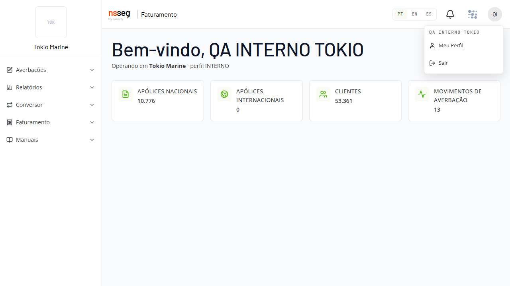
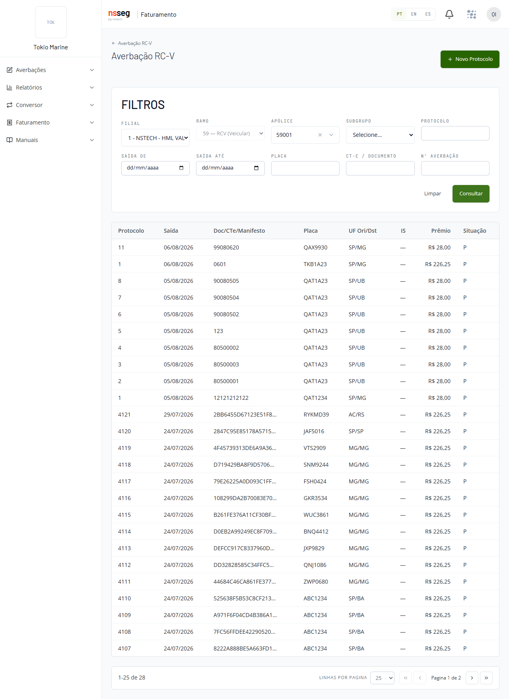
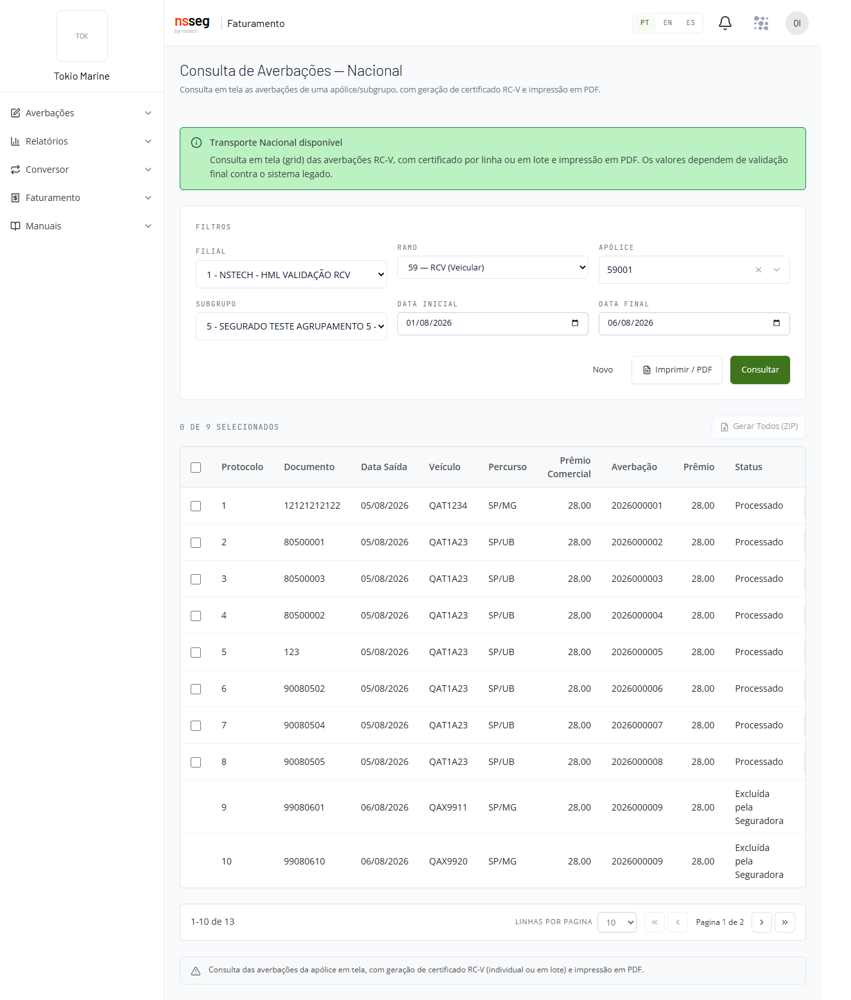
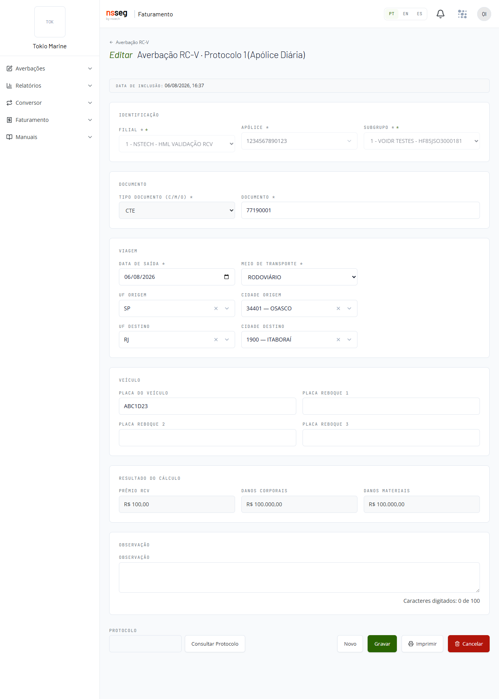
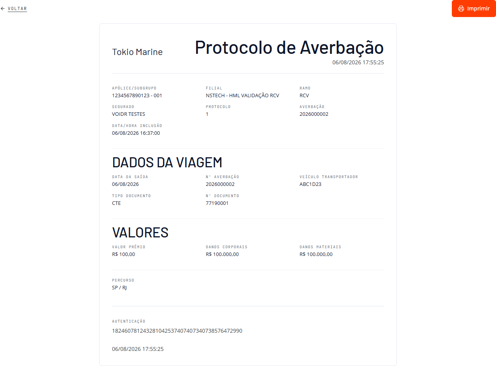
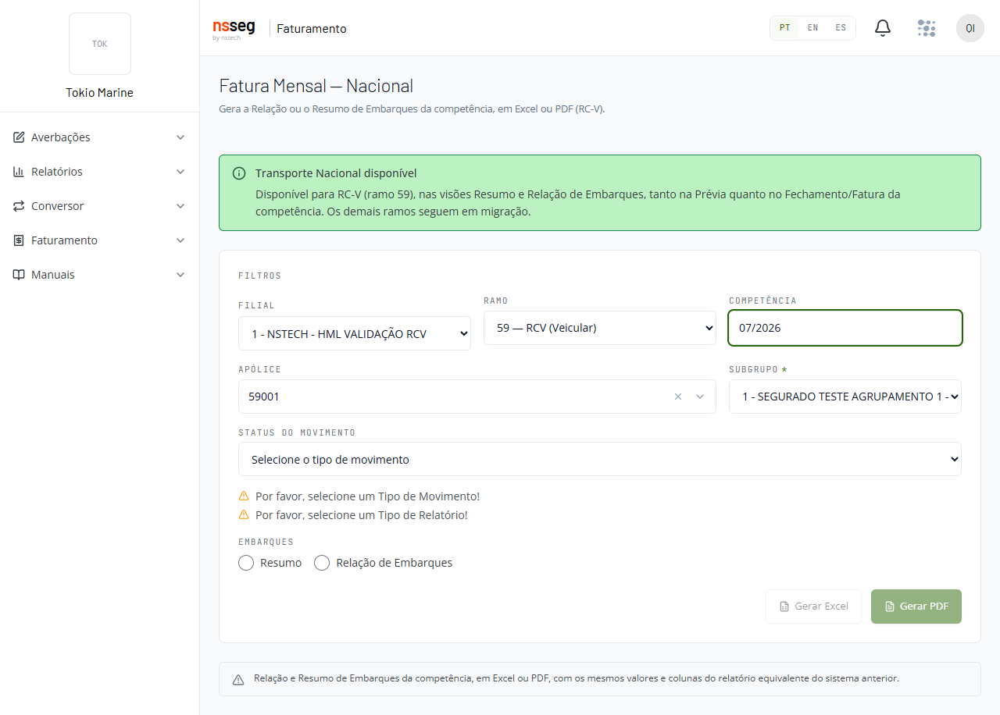

Sobre este manual e sobre o sistema
O nsseg — Faturamento é o sistema usado para registrar e acompanhar averbações de seguro de transporte. É a versão nova do CITNET. Dentro do time, muita gente ainda o chama de "CITNET novo".
O sistema funciona dentro do navegador do computador — o mesmo programa que você já usa para abrir sites. Não é preciso instalar programa nenhum.
Palavras que aparecem em todo o manual
Antes de qualquer coisa, quatro palavras do dia a dia do seguro. Elas voltam em todos os capítulos.
| Palavra | O que quer dizer |
|---|---|
| Apólice | O contrato do seguro. É nela que estão as condições combinadas entre a seguradora e o cliente. |
| Averbação | O registro de um transporte no seguro: informar à seguradora aquela viagem ou aquela carga, para que ela fique amparada pela apólice. Cada transporte informado é uma averbação. É isso que o sistema faz. |
| Ramo | O tipo de seguro. Cada ramo tem um nome e um número. Este manual trata de um ramo só: RCV — Responsabilidade Civil do Veículo, que nas telas e nas conversas também aparece pelo número, como ramo 59. Se você não sabe em qual ramo trabalha, pergunte a quem liberou o seu acesso. |
| Prévia | A relação do que será cobrado, montada antes de a cobrança do mês ser fechada. Serve para conferir e aprovar. Depois de aprovada, segue para o faturamento — a cobrança do mês propriamente dita, que no sistema aparece como Fatura Mensal. |
Quem usa
Usam o sistema as pessoas que lidam com o dia a dia do seguro de transporte: corretores e assessorias, que intermedeiam o seguro; segurados, as empresas que contratam o seguro; e a equipe da seguradora.
Cada pessoa vê apenas o que o seu acesso permite. Por isso, alguns itens descritos aqui podem não aparecer na sua tela — e isso não é erro do sistema nem do manual. Se você precisa de um item que não aparece, fale com quem liberou o seu acesso na seguradora.
O que este manual cobre
Este manual trata do ramo RCV (Responsabilidade Civil do Veículo, ramo 59). É o ramo que já está disponível no sistema novo.
Todas as telas, campos e mensagens descritas aqui foram observadas nas telas reais do sistema em 06/08/2026, no ambiente de homologação da seguradora Tokio Marine. Ambiente de homologação é uma cópia do sistema, separada, usada para conferir tudo antes de liberar para o trabalho do dia a dia. Foi lá que este manual foi escrito. Use-o como guia e, se algo na sua tela estiver diferente do descrito, avise quem cuida do seu acesso.
O que você encontra no menu
O menu é a lista de grupos que fica ao lado do conteúdo da tela. Localize-o pelos nomes: são exatamente estes cinco grupos, e não há outros — Averbações, Relatórios, Conversor, Faturamento e Manuais. Clique no nome de um grupo para abrir os itens que ficam dentro dele.
Se você não estiver vendo essa lista de cinco nomes, não continue: confira primeiro se entrou no sistema certo e, se o menu continuar sem aparecer, fale com quem cuida do seu acesso.
| Grupo do menu | Itens dentro do grupo | Para que serve |
|---|---|---|
| Averbações | RCV (um item só) | É a tela das averbações do ramo RCV: o lugar onde se consulta uma averbação já registrada, onde se inclui uma nova e onde se altera uma existente. O passo a passo está no capítulo do RCV. Atenção: é um único item de menu — não procure um item para cada ação. |
| Relatórios | Consulta e Fatura Mensal | Consulta: ver as averbações em forma de relatório. Fatura Mensal: gerar a cobrança do mês. Cada uma tem o seu capítulo. |
| Conversor | Nenhum — este grupo não tem itens dentro dele | Enviar um arquivo com várias averbações de uma só vez, em vez de digitar uma por uma. Como não há itens, o clique em Conversor abre a tela direto: nada se abre embaixo do nome, e esse é o comportamento correto. |
| Faturamento | Aprovação de Prévias | Conferir e aprovar a prévia — a relação do que vai ser cobrado — antes de a cobrança do mês ser fechada. |
| Manuais | Manual RCV e Manual RCV - Certificado | Abrir, de dentro do próprio sistema, os manuais que ele disponibiliza. |

A barra do alto da tela
Acima do conteúdo há uma barra que fica sempre no mesmo lugar, em todas as telas. Ela tem quatro coisas. Procure cada uma pelo nome ou pelo desenho descrito abaixo — passar o ponteiro do mouse sobre o desenho costuma mostrar o nome dele.
- O seletor de idioma, com três siglas: PT (português), EN (inglês) e ES (espanhol). Clique na sigla desejada e os textos das telas passam a ser exibidos naquele idioma. Este manual foi escrito com o sistema em PT; se você trocar o idioma, os nomes de campos e botões citados aqui não vão mais coincidir com a sua tela. Se isso acontecer, clique em PT para voltar.
- O ícone de sino, cujo nome é Caixa Postal. Veja o aviso logo abaixo antes de clicar nele.
- O botão Abrir aplicações, que dá acesso a outras aplicações liberadas para o seu usuário, fora do Faturamento. Este manual trata somente do nsseg — Faturamento: as outras aplicações que aparecerem ali não são descritas aqui. Se clicar sem querer, volte para o Faturamento antes de seguir o manual.
- O botão com as iniciais do seu nome — um botão redondo mostrando as iniciais de quem está usando o sistema. Clique nele: abre-se um menu com duas opções, Meu Perfil (dados do seu usuário; não é usado em nenhum passo deste manual) e Sair. Use Sair sempre que terminar o trabalho — é assim que se fecha o sistema com segurança, e não apenas fechando a janela do navegador.

Como ler este manual
Os capítulos seguintes trazem os caminhos em passos numerados. Cada passo diz o que clicar e, em seguida, o que deve aparecer na tela.
Confira o resultado de cada passo antes de ir para o próximo. Se o que apareceu for diferente do descrito, pare, volte ao passo anterior e refaça. Se continuar diferente depois de refazer, não siga adiante nem repita a operação várias vezes: anote em que passo parou, tire uma foto da tela e procure quem cuida do seu acesso na seguradora.
Os nomes de campos e botões aparecem sempre em destaque e com a mesma escrita da tela, inclusive em letras maiúsculas quando é assim que a tela mostra. Por exemplo: o campo APÓLICE. Se um nome citado no manual não existir na sua tela, há duas explicações comuns: o seu acesso não inclui aquela função, ou o idioma da barra do alto não está em PT. Confira o idioma primeiro; se estiver em PT e o nome continuar ausente, é o acesso — fale com quem o liberou.
Entrar no sistema
O nsseg — Faturamento é a nova versão do CITNET (dentro do time, você pode ouvir o nome "CITNET novo"). Ele funciona dentro do navegador de internet, então não é preciso instalar nada no computador. Hoje o sistema atende o ramo RCV — Responsabilidade Civil do Veículo, identificado no sistema como ramo 59.
Antes de começar
Você precisa de quatro informações. Todas são entregues pela sua seguradora ou pelo responsável do seu escritório — nenhuma delas você descobre sozinho na tela:
- o endereço da página de entrada;
- qual opção escolher no campo AMBIENTE (o nome exato, letra por letra, como ele aparece na lista);
- o nome do seu usuário;
- a sua senha.
Peça as quatro juntas antes de sentar para trabalhar. Se faltar qualquer uma, não é possível entrar.
Sobre o endereço: homologação e uso real
Existe mais de um ambiente do sistema. Homologação é o ambiente usado para treinar, conferir e testar — o que você lança nele não vale como registro do dia a dia. O endereço do ambiente de homologação é:
hmlcitfaturamento.atmtec.com.br
Para abrir: clique na barra de endereços do navegador (a faixa larga no alto da janela, onde ficam escritos os endereços das páginas), apague o que estiver escrito, digite o endereço acima e pressione a tecla Enter. Não é preciso digitar nada antes do endereço.
A tela de entrada
Ao abrir o endereço, o sistema mostra o título Bem-vindo de volta e, abaixo dele, a frase Entre com suas credenciais para acessar a plataforma.
Nessa tela existem, de cima para baixo:
- o campo AMBIENTE, que é uma lista para escolher e começa mostrando — selecione —;
- o campo USUÁRIO, uma caixa de texto comum;
- o campo SENHA, uma caixa de texto que esconde o que você digita, com um pequeno desenho de olho dentro do próprio campo (esse desenho é o botão Mostrar senha, explicado adiante);
- o botão Entrar no nsseg;
- no pé da tela, a frase "Ao entrar você concorda com os Termos de Uso e a Política de Privacidade", em que as duas expressões destacadas são links.
Passo a passo para entrar
- Clique no campo AMBIENTE. Ele começa mostrando — selecione —. Ao clicar, abre-se a lista das seguradoras disponíveis.
- Na lista, clique exatamente na opção que o responsável informou. As opções disponíveis são: AXA Seguros, AXA, Allianz, Berkley, Ezze, Fairfax, Kovr, Mitsui, NSTech, Starr, STG, Tokio Marine, Zurich, Suhai (Piloto HOM), AXA - HML - ALFA e KOVR - HML - ALFA. O nome escolhido passa a aparecer no campo AMBIENTE, no lugar de — selecione —.
- Clique no campo USUÁRIO e digite o seu usuário. Enquanto o campo está vazio, ele exibe em cinza claro a expressão seu usuário: isso é apenas uma dica de preenchimento, não um valor já preenchido — ela desaparece quando você começa a digitar.
- Clique no campo SENHA e digite a sua senha. Os caracteres aparecem como pontinhos, para que ninguém ao seu lado veja o que você digitou. Se quiser conferir a digitação agora, use o desenho de olho do próprio campo (veja O botão Mostrar senha, logo abaixo) e depois esconda a senha de novo.
- Olhe o botão Entrar no nsseg. Enquanto os quatro dados acima não estiverem informados, ele fica apagado (acinzentado) e não responde ao clique. Quando os dados estão completos, ele fica com a cor cheia e passa a responder.
- Clique em Entrar no nsseg. Se os dados estiverem corretos, o sistema abre a tela inicial (descrita em O que você vê depois de entrar).
O botão Mostrar senha
Dentro do campo SENHA, à direita do que você digita, existe um pequeno desenho de olho. Esse desenho é o botão chamado Mostrar senha — o nome não aparece escrito na tela, então procure o desenho, não a palavra.
- Clique no desenho de olho. Os pontinhos são substituídos pela senha escrita por extenso, e você consegue conferir se digitou corretamente.
- Clique novamente no mesmo desenho para voltar a esconder a senha.
Use esse botão sempre que a entrada falhar por suspeita de erro de digitação. Alguns caracteres são fáceis de confundir, como a letra L minúscula (l), a letra i maiúscula (I) e o número 1, ou o zero (0) e a letra O.
Se não conseguir entrar
Duas situações diferentes, com soluções diferentes:
1. O botão Entrar no nsseg continua apagado e não responde ao clique. Falta preencher algo. Confira, nesta ordem:
- o campo AMBIENTE: se ele ainda mostra — selecione —, nada foi escolhido;
- o campo USUÁRIO: se aparece seu usuário em cinza claro, ele está vazio;
- o campo SENHA: se não há nenhum pontinho, ele está vazio.
2. Você clicou em Entrar no nsseg e a tela inicial não abriu. Nesse caso o acesso não foi aceito. Não fique repetindo o clique: confira o usuário e a senha (use o botão Mostrar senha para ler a senha por extenso), confira se o AMBIENTE escolhido é o que foi informado e tente uma vez mais. Se ainda não entrar, procure o responsável que liberou o seu acesso e informe qual AMBIENTE e qual usuário você está usando — nunca informe a sua senha a ninguém.
Termos de Uso e Política de Privacidade
No pé da tela de entrada aparece a frase "Ao entrar você concorda com os Termos de Uso e a Política de Privacidade". As duas expressões destacadas são links: clique sobre elas se quiser ler o conteúdo antes de entrar.
O que você vê depois de entrar
Concluída a entrada, o sistema abre a tela inicial. Confira dois pontos logo de imediato:
- No alto, à esquerda, aparecem a sigla e o nome da seguradora que você escolheu no campo AMBIENTE — por exemplo, TOK / Tokio Marine. Leia e confirme que é a seguradora certa antes de lançar qualquer informação.
- O menu do sistema, com os grupos de telas que o seu usuário pode usar (lista abaixo).
O menu reúne os seguintes grupos e itens:
- Averbações — item: RCV
- Relatórios — itens: Consulta e Fatura Mensal
- Conversor
- Faturamento — item: Aprovação de Prévias
- Manuais — itens: Manual RCV e Manual RCV - Certificado
Neste capítulo você não precisa abrir nenhum desses itens: aqui o objetivo é apenas entrar, conferir a seguradora e reconhecer o que está na tela. Cada grupo (o que significa averbação, prévia, fatura mensal e o que faz o Conversor) é tratado em capítulo próprio deste manual. Se o seu menu mostrar menos grupos do que a lista acima, é porque o seu perfil de acesso não inclui os demais.
A barra do topo
A barra que fica no alto da tela acompanha você em todas as telas do sistema. Da esquerda para a direita, ela tem:
- o seletor de idioma, que apresenta as três siglas PT, EN e ES;
- um desenho de sino, que é o item chamado Caixa Postal — ainda não disponível neste ambiente;
- o botão Abrir aplicações;
- o botão redondo com as iniciais do seu usuário.
Trocar o idioma da tela
O sistema pode exibir os textos em três idiomas.
Se ainda assim precisar trocar:
- Na barra do topo, localize as siglas PT, EN e ES — é o seletor de idioma.
- Clique na sigla do idioma desejado: PT para português, EN para inglês ou ES para espanhol. Os textos da tela passam a ser exibidos no idioma escolhido.
- Para voltar ao português, clique em PT no mesmo lugar.
O menu com as suas iniciais (e como sair)
O botão redondo no canto da barra do topo mostra as iniciais do seu usuário e dá acesso a duas opções.
- Clique no botão com as suas iniciais. Abre-se um pequeno menu com dois itens: Meu Perfil e Sair.
- Clique em Meu Perfil para abrir a página do seu perfil de usuário — o conteúdo dessa página não é tratado neste capítulo. Para voltar, use o menu do sistema.
- Clique em Sair para encerrar o seu acesso: o sistema encerra o uso do sistema e volta para a tela de entrada.
Use Sair ao terminar o trabalho, ao trocar de seguradora e sempre que precisar deixar o computador.
Qual a diferença em relação ao sistema antigo
Se você já usava o CITNET, esta é a mudança que mais chama a atenção na hora de entrar.
| Na tela de entrada | Sistema antigo | nsseg — Faturamento |
|---|---|---|
| Escolha da seguradora | Não era escolhida na entrada | Escolhida no campo AMBIENTE |
| Escolha da filial | Havia um campo Filial na entrada | Não existe na entrada; a filial é escolhida dentro de cada tela |
Ou seja: não procure a filial na hora de entrar — ela não está lá. Você a informa depois, já dentro do sistema, na própria tela em que for trabalhar — por exemplo, ao lançar uma averbação (telas de Averbações) ou ao pedir um relatório (telas de Relatórios). Cada uma dessas telas indica, no capítulo correspondente, onde fica o campo da filial.
Conhecendo a tela inicial e o menu
Este capítulo apresenta a primeira tela que você vê depois de entrar no sistema nsseg — Faturamento. O sistema funciona dentro do navegador de internet (o mesmo programa que você usa para abrir sites). Nada precisa ser instalado no seu computador.
Leia este capítulo com calma. Depois de conhecer a tela inicial, você saberá para onde ir em cada tarefa do dia a dia.
Antes de começar: como chegar até esta tela
Para ver a tela inicial você precisa, nesta ordem:
- Receber da área responsável na sua empresa (o seu gestor ou o suporte interno) o endereço (link) do sistema e o seu usuário e senha. Esses dados não estão neste manual porque mudam de empresa para empresa e de ambiente para ambiente.
- Abrir o navegador de internet e acessar o endereço recebido.
- Entrar com o seu usuário e senha.
Assim que a entrada é aceita, o sistema mostra a tela inicial descrita neste capítulo. Se você ainda não conseguiu entrar, este capítulo não vai ajudar: resolva primeiro o acesso com a área responsável.
Como ler os exemplos deste capítulo
- Quando aparecer um texto entre os sinais < e >, como <NOME DO USUÁRIO>, isso não é o que você vai ver na tela: é o lugar onde o sistema coloca a informação real. Se o seu nome é Maria Silva, a tela mostra Bem-vindo, Maria Silva — sem os sinais < >.
- Os números grandes aparecem com ponto separando os milhares. Portanto 10.776 se lê "dez mil setecentos e setenta e seis", e não "dez vírgula setecentos".
As três partes da tela (nomes usados neste capítulo)
Para não haver confusão, este capítulo chama sempre pelo mesmo nome cada parte da tela:
| Nome usado aqui | Onde fica |
|---|---|
| Barra do topo | A faixa que atravessa a tela de um lado ao outro, na parte de cima. |
| Menu lateral | A coluna do lado esquerdo, com os nomes dos grupos de telas. |
| Área central | O espaço grande no meio da tela, à direita do menu. É onde aparecem a saudação e os cartões de números e, depois, cada tela que você abrir pelo menu. |
O que aparece no alto da área central
Logo ao entrar, o sistema mostra uma saudação com o seu nome, no formato Bem-vindo, <NOME DO USUÁRIO>.
Abaixo da saudação aparece uma linha que informa em qual seguradora você está trabalhando e qual é o seu tipo de acesso. Ela tem o formato Operando em <Seguradora> · perfil INTERNO. O sinal · é apenas um ponto que separa as duas informações; não é defeito na tela.
Nessa linha:
- <Seguradora> é o nome da seguradora cujos dados você está vendo. No ambiente observado, por exemplo, aparecia Tokio Marine.
- perfil é o tipo do seu acesso, definido por quem liberou o seu usuário. No ambiente observado o perfil era INTERNO. Se o seu vier com outra palavra, não é erro.
Confira sempre essa linha antes de começar a trabalhar, porque tudo o que você fizer vale para a seguradora indicada nela.
Os quatro cartões de números
Na área central existem quatro cartões. Cada cartão mostra uma quantidade referente à seguradora indicada na linha Operando em. Eles servem para você ter uma visão rápida do volume de informações.
| Cartão | O que o número significa |
|---|---|
| APÓLICES NACIONAIS | Quantidade de apólices nacionais cadastradas na seguradora em que você está operando. |
| APÓLICES INTERNACIONAIS | Quantidade de apólices internacionais cadastradas. Pode aparecer 0 (zero); zero significa apenas que não há nenhuma registrada, não é erro do sistema. |
| CLIENTES | Quantidade de clientes cadastrados. |
| MOVIMENTOS DE AVERBAÇÃO | Quantidade de movimentos de averbação registrados. |
Os números mudam conforme a seguradora e conforme o movimento do dia. No ambiente observado, por exemplo, APÓLICES NACIONAIS mostrava 10.776, APÓLICES INTERNACIONAIS mostrava 0, CLIENTES mostrava 53.361 e MOVIMENTOS DE AVERBAÇÃO mostrava 13. Esses valores são apenas exemplo: os seus serão outros.
O menu lateral esquerdo
Do lado esquerdo da tela fica o menu, organizado em grupos. Cada grupo tem um nome e, dentro dele, um ou mais itens. Os itens só aparecem depois que você clica no nome do grupo.
- Clique no nome do grupo desejado, por exemplo Averbações.
- O grupo se abre logo abaixo do nome e mostra os itens que pertencem a ele. Clicar de novo no nome do grupo fecha essa lista, sem abrir nenhuma tela.
- Clique no item desejado, por exemplo RCV. A tela correspondente abre na área central, no lugar dos cartões de números. O menu lateral permanece no lugar.
Você pode abrir um grupo e, em seguida, abrir outro: mais de um grupo pode ficar aberto ao mesmo tempo, como na imagem a seguir.
Veja abaixo cada grupo e cada item existente no menu, e para que serve cada um. O funcionamento de cada tela, campo por campo, é assunto dos capítulos seguintes deste manual.
| Grupo | Item | Para que serve |
|---|---|---|
| Averbações | RCV | Consultar as averbações já registradas e incluir novas averbações. |
| Relatórios | Consulta | Pesquisar averbações e ver os certificados emitidos. |
| Relatórios | Fatura Mensal | Gerar a fatura do mês. |
| Conversor | Conversor | Enviar um arquivo para registrar muitas informações de uma vez, em vez de digitar uma por uma. |
| Faturamento | Aprovação de Prévias | Conferir e aprovar as prévias antes do faturamento. |
| Manuais | Manual RCV | Abrir o manual do RCV. |
| Manuais | Manual RCV — Certificado | Abrir o manual do certificado do RCV. |
A barra do topo
A barra do topo tem quatro recursos, da esquerda para a direita: o seletor de idioma, o ícone de sino chamado Caixa Postal, o botão Abrir aplicações e, no canto direito, o botão com as suas iniciais. Se não encontrar algum deles de imediato, percorra a faixa do topo com o olhar de uma ponta à outra — a posição exata pode variar conforme o tamanho da janela.
- Seletor de idioma: mostra as três letras PT (português), EN (inglês) e ES (espanhol). Clique em uma delas e os textos da tela passam a ser exibidos nesse idioma. Para voltar ao português, clique em PT no mesmo seletor — ele continua no mesmo lugar mesmo com a tela em inglês ou espanhol, então sempre é possível voltar.
- Caixa Postal: é o ícone em forma de sino. Este recurso ainda não está disponível; veja o aviso abaixo antes de clicar.
- Abrir aplicações: botão com esse nome, usado para chegar a outras aplicações. Este manual trata apenas do nsseg — Faturamento, portanto não descreve o que há do outro lado; se precisar de outra aplicação, pergunte à área responsável qual usar. Se clicar por engano, nada do seu trabalho é apagado: volte a usar o menu lateral.
- Botão com as suas iniciais: fica no canto superior direito e abre o menu do usuário, explicado no item seguinte.
O menu do usuário
No canto superior direito há um botão redondo com as suas iniciais, isto é, as primeiras letras do seu nome (por exemplo, MS para Maria Silva). É por ele que você confere quem está conectado e encerra o acesso.
- Clique no botão com as suas iniciais.
- Abre-se um menu mostrando o seu nome e duas opções: Meu Perfil e Sair. Se você abriu por engano, clique em qualquer ponto fora desse menu para fechá-lo sem escolher nada.
- Clique em Meu Perfil para consultar os dados do seu acesso. Abre-se uma tela de consulta no lugar do que estava na área central; para seguir trabalhando, escolha no menu lateral a tela desejada.
- Clique em Sair quando terminar o trabalho. O sistema encerra o seu acesso; para voltar a usar será preciso entrar de novo com usuário e senha.
Recurso de acessibilidade
No começo da página existe um link chamado Pular para o conteúdo. Ele leva direto para a área central, sem passar por todo o menu. É voltado a quem navega pelo teclado ou com leitor de tela. Se você usa o mouse, pode ignorá-lo: ele costuma não ficar visível na tela e não é necessário, porque você clica direto no que quer.
Termos que aparecem nesta tela
Alguns nomes da tela vêm do dia a dia de seguros. Este capítulo não ensina as regras desses assuntos — ele mostra onde cada um fica no menu. Se algum termo for novo para você, confirme o significado com a sua área antes de lançar qualquer informação.
| Termo | Onde aparece | O que este capítulo pode dizer |
|---|---|---|
| RCV | Grupo Averbações e itens de Manuais | Significa Responsabilidade Civil do Veículo (chamado de ramo 59 dentro dos sistemas). É o único tipo de seguro atendido nesta versão. |
| Apólice | Cartões APÓLICES NACIONAIS e APÓLICES INTERNACIONAIS | Termo de seguros. Nesta tela os cartões apenas contam quantas existem cadastradas. |
| Averbação / movimento de averbação | Cartão MOVIMENTOS DE AVERBAÇÃO e grupo Averbações | Termo de seguros. É o assunto da tela Averbações > RCV, tratada em capítulo próprio. |
| Prévia | Faturamento > Aprovação de Prévias | Termo de seguros. É o assunto dessa tela, tratada em capítulo próprio. |
| Certificado | Manuais > Manual RCV — Certificado | Termo de seguros. O manual específico está nesse item do menu. |
| Perfil | Linha Operando em … · perfil … | Indica o tipo do seu acesso. No ambiente observado era INTERNO. Quem define o seu perfil é a área responsável pelo acesso. |
Quero fazer isto — onde clicar
Use a tabela abaixo como atalho. Na coluna da esquerda está o que você quer fazer; na coluna da direita, o caminho no menu. Leia o sinal > assim: clique primeiro no nome do grupo, depois no item indicado. O que cada tela permite fazer depende do tipo de acesso liberado para o seu usuário.
| Quero fazer | Vá em |
|---|---|
| Ver as averbações já registradas | Averbações > RCV |
| Incluir uma nova averbação | Averbações > RCV |
| Consultar os dados de uma averbação já registrada | Averbações > RCV |
| Pesquisar averbações e ver os certificados | Relatórios > Consulta |
| Gerar a fatura do mês | Relatórios > Fatura Mensal |
| Enviar um arquivo com muitos registros de uma vez | Conversor > Conversor |
| Conferir e aprovar prévias | Faturamento > Aprovação de Prévias |
| Consultar o manual do RCV | Manuais > Manual RCV |
| Consultar o manual do certificado | Manuais > Manual RCV — Certificado |
| Trocar o idioma da tela (e voltar ao português) | Barra do topo, seletor com PT, EN e ES |
| Ver os dados do meu acesso | Botão com as suas iniciais > Meu Perfil |
| Encerrar o acesso | Botão com as suas iniciais > Sair |
| Conferir em qual seguradora estou operando | Linha Operando em … · perfil …, abaixo da saudação, na área central |
| Voltar a ver os cartões de números | Sair pelo botão Sair e entrar no sistema novamente |
Procurar uma averbação já lançada
Este capítulo mostra como encontrar uma averbação que já foi lançada no sistema. Use esta tela quando você precisar conferir os dados de uma averbação, ver o prêmio calculado ou abrir a averbação para consulta.
Para seguir este capítulo você precisa de duas coisas: estar com o sistema já aberto na tela inicial, com o menu à esquerda visível, e saber pelo menos parte do número da apólice que você quer consultar. O número da apólice é obrigatório nesta tela: sem ele o sistema não pesquisa. Se você não tiver esse número, peça a quem cuida das apólices na sua empresa antes de continuar.
Como chegar na tela
- No menu que fica à esquerda da tela, clique em Averbações.
- Ao clicar, abrem-se os itens que ficam dentro de Averbações. Clique no item RCV.
- A tela Averbação RC-V abre. No alto dela você vê o bloco FILTROS, com os campos de pesquisa. Abaixo dele fica a lista, que é onde as averbações vão aparecer depois que você fizer a consulta.
No alto, à direita, existe o botão verde + Novo Protocolo. Ele serve para lançar uma averbação nova. Para apenas procurar uma averbação já existente, não clique nele.

Os campos do bloco FILTROS, um por um
Só um campo é obrigatório: APÓLICE. Todos os outros são opcionais e servem para deixar a lista de resultados menor e mais precisa. Se você não souber o que colocar em um campo, deixe-o em branco — a pesquisa funciona com a apólice sozinha, apenas devolve mais linhas.
| Campo | Para que serve | Precisa preencher? |
|---|---|---|
| FILIAL | Escolha a filial em uma lista. Serve para ver somente as averbações daquela filial. | Não. Se você não souber a filial, deixe a lista como ela já está. |
| RAMO | Já vem preenchido com 59 — RCV (Veicular) e não pode ser alterado. Esta tela trata apenas desse ramo. Se você clicar nele, nada muda — isso é o normal. | Não dá para mexer. |
| APÓLICE | É um campo de busca: você digita parte do número e o sistema mostra uma lista de apólices para você escolher. | Sim, é obrigatório. Sem ele o sistema não pesquisa. |
| SUBGRUPO | Lista dos subgrupos daquela apólice. | Não. E ele só abre depois que você escolher a apólice — veja o passo a passo abaixo. |
| PROTOCOLO | O número que identifica a averbação. É o mesmo número que aparece na coluna Protocolo, a primeira coluna da lista de resultados. Se você já anotou esse número antes, é a forma mais direta de achar a averbação. | Não. |
| SAÍDA DE | Data inicial do período de saída que você quer consultar. | Não. |
| SAÍDA ATÉ | Data final do período de saída. | Não. Preencha as duas datas juntas para pesquisar um intervalo. |
| PLACA | A placa do veículo, para ver as averbações daquele veículo. | Não. |
| CT-E / DOCUMENTO | O número do CT-e ou do documento da carga. É o mesmo número que aparece na coluna Doc/CTe/Manifesto da lista. | Não. |
| Nº AVERBAÇÃO | O número da averbação, quando você já o tiver em mãos. | Não. |
Fazer a consulta
Faça na ordem abaixo. A apólice tem de ser a primeira coisa, porque o campo SUBGRUPO só funciona depois dela.
- Clique dentro do campo APÓLICE e comece a digitar o número da apólice. Você não precisa digitar o número inteiro: digite um pedaço dele e espere um instante.
- Aparece abaixo do campo uma lista com as apólices parecidas com o que você digitou. Clique na apólice desejada dentro dessa lista. Só digitar não escolhe a apólice — é o clique na lista que escolhe.
- Como saber que deu certo: depois de clicar na apólice, o campo SUBGRUPO passa a abrir. Se o SUBGRUPO continuar sem abrir, a apólice ainda não foi escolhida — repita este passo.
- Se nenhuma lista aparecer: apague o que você digitou e tente com menos números (por exemplo, só os três ou quatro primeiros). Se ainda assim não aparecer nada, é sinal de que não existe apólice com esse trecho de número — confira o número que você tem em mãos.
- Se quiser, preencha também algum dos filtros opcionais para diminuir a lista. Quando usar cada um:
- Você sabe o número do protocolo: preencha PROTOCOLO.
- Você sabe o período da saída: preencha SAÍDA DE e SAÍDA ATÉ. Digite as datas no mesmo formato que o campo mostrar; se o campo abrir um calendário, escolha o dia no calendário.
- Você sabe o veículo: preencha PLACA.
- Não sabe nenhum desses: não preencha nada e siga para o passo seguinte.
- Clique em Consultar.
- A lista abaixo dos filtros é preenchida com as averbações encontradas, uma por linha, e no rodapé aparece quantas foram encontradas (por exemplo, 1-25 de 28).
- Se não aparecer nenhuma linha, é porque nenhuma averbação daquela apólice atende aos filtros que você preencheu. Apague os filtros opcionais (as datas, a placa, o protocolo), mantenha só a apólice e clique em Consultar de novo.
Para começar uma pesquisa do zero, clique em Limpar. Os campos que você havia preenchido ficam em branco — inclusive a APÓLICE, que precisará ser escolhida outra vez antes da próxima consulta. O campo RAMO continua com 59 — RCV (Veicular), porque ele é fixo nesta tela.
O que cada coluna da lista mostra
As colunas aparecem nesta ordem, da esquerda para a direita:
| Coluna | O que aparece nela |
|---|---|
| Protocolo | O número do protocolo daquela averbação. É este número que você pode anotar para achar a mesma averbação depois, pelo filtro PROTOCOLO. |
| Saída | A data de saída informada na averbação. |
| Doc/CTe/Manifesto | O número do documento da carga: o CT-e, o documento ou o manifesto, conforme o que foi informado na averbação. |
| Placa | A placa do veículo. |
| UF Ori/Dst | O estado de origem e o estado de destino da viagem (UF é a sigla do estado, como SP ou RJ). |
| IS | A importância segurada, isto é, o valor segurado daquela averbação. |
| Prêmio | O valor do prêmio calculado para a averbação. |
| Situação | Em que estado a averbação está. Nesta lista o estado aparece abreviado com uma letra — veja o item seguinte. |
A coluna Situação vem abreviada
Na lista da tela Averbação RC-V, a coluna Situação mostra apenas uma letra. Por exemplo, a letra P.
Essa letra é apenas a forma abreviada de mostrar o mesmo estado da averbação. Ela foi abreviada só para caber na largura da coluna. Não é um estado diferente, e não indica problema nenhum.
Se aparecer uma letra que você não conhece, ou se você quiser simplesmente ler o estado escrito por inteiro, consulte a mesma averbação em outra tela:
- No menu à esquerda, clique em Relatórios.
- Clique em Consulta de Averbações.
- Nessa tela, o mesmo estado aparece escrito por extenso, e não abreviado. Por exemplo, onde a lista da tela Averbação RC-V mostrava P, aqui aparece Processado.
A tela Consulta de Averbações tem os próprios campos de pesquisa, que não são explicados neste capítulo. Antes de sair da tela Averbação RC-V, anote o número que está na coluna Protocolo da linha que lhe interessa: é por ele que você vai reconhecer a mesma averbação do outro lado.

Ver mais linhas e mudar de página
Quando a consulta encontra mais averbações do que cabem na tela, elas são divididas em páginas. No rodapé da lista, embaixo da última linha, você encontra as informações para navegar entre as páginas:
- A contagem de averbações encontradas, no formato 1-25 de 28. Leia assim: estão sendo exibidas as linhas 1 a 25, e foram encontradas 28 averbações no total.
- O seletor LINHAS POR PÁGINA, que normalmente vem com 25. Clique nele e escolha um dos números oferecidos na lista, para ver mais ou menos averbações de uma vez. Escolher um número maior que o total encontrado faz tudo caber em uma única página.
- Quatro setas, nesta ordem, da esquerda para a direita: primeira página, página anterior, próxima página e última página. A terceira é a de próxima página.
- A indicação da página atual, no formato Página 1 de 2. O primeiro número é a página que você está vendo; o segundo é quantas páginas existem.
- Confira na indicação de página se existe mais de uma página. Se estiver escrito Página 1 de 1, não há próxima página: a lista inteira já está na sua frente e as setas não têm para onde ir.
- Havendo mais páginas, clique na seta de próxima página (a terceira).
- As linhas são substituídas pelas averbações da página seguinte, a contagem passa a mostrar o novo intervalo (por exemplo, 26-28 de 28) e a indicação muda para Página 2 de 2. Para voltar, clique na seta de página anterior (a segunda).
Abrir uma averbação da lista
- Localize na lista a linha da averbação que você quer ver. Se precisar, use a coluna Protocolo ou a coluna Saída para reconhecer a linha certa.
- Clique em qualquer ponto dessa linha — não existe botão de abrir; a própria linha é clicável.
- A averbação abre em outra tela, com os dados que foram gravados, para você consultar.
Terminada a consulta, para procurar outra averbação refaça o caminho do menu: Averbações > RCV. A tela de pesquisa abre novamente e os filtros precisam ser preenchidos de novo, começando pela apólice.

Lançar uma nova averbação
Este é o capítulo mais importante do manual. Aqui você aprende a lançar uma averbação nova, do começo ao fim, na mesma ordem em que os campos aparecem na tela.
Leia com calma na primeira vez, do início até o fim, antes de digitar qualquer coisa. Depois de duas ou três averbações, o caminho fica natural.
Palavras que aparecem neste capítulo
Se você nunca usou o sistema, comece por aqui. São os termos que aparecem nos rótulos da tela:
| Termo | O que significa neste manual |
|---|---|
| Averbação | O registro da viagem da carga no seguro. É feito antes de a carga sair. |
| RC-V e RCV | São a mesma coisa: o tipo de seguro tratado neste capítulo. A tela de lista aparece como Averbações RCV e a tela de lançamento como Averbação RC-V. A diferença é só de escrita. |
| Apólice | O contrato de seguro. É ela que define os valores que o sistema traz sozinho na tela. |
| Subgrupo | Uma divisão dentro da apólice. Uma apólice pode ter um subgrupo só ou vários, e cada um pode ter valores diferentes. |
| Filial | A unidade da sua empresa em nome da qual a averbação é lançada. |
| Prêmio | O valor do seguro daquela viagem, calculado pelo sistema. Você não digita. |
| UF | A sigla do estado (por exemplo SP, MG, PR). |
| Protocolo | O número que o sistema cria quando a averbação é gravada. É por ele que você acha a averbação depois. |
| Cavalo e reboque | Cavalo é o veículo que puxa (o caminhão); reboque é a carreta puxada. Cada um tem a sua própria placa. |
Antes de começar
Tenha em mãos, por escrito, todas as informações abaixo. Se faltar alguma, não comece o lançamento: as três primeiras não podem ser adivinhadas na hora.
- Qual filial deve constar no lançamento. Quem define isso é a sua empresa, não o sistema. Se você não sabe, pergunte antes a quem cuida do seguro.
- Qual apólice será usada: o número da apólice ou o nome do segurado.
- Qual subgrupo dessa apólice, caso ela tenha mais de um. Isso também vem da sua empresa ou da seguradora.
- O documento da viagem: qual é o tipo (CT-e, nota fiscal eletrônica ou outro) e o número que está nele.
- A data de saída da carga — atenção: o sistema só aceita de hoje até 5 dias à frente (veja a regra no bloco 3).
- O percurso: estado e cidade de origem, estado e cidade de destino.
- As placas do veículo e dos reboques, se você for informar. Esse preenchimento é opcional.
Abrir a tela de lançamento
Este capítulo começa na tela Averbações RCV, que é a tela de lista. Se você ainda não está nela, volte ao capítulo que mostra como abrir Averbações RCV e siga o caminho de lá; sem essa tela aberta não é possível seguir daqui.
- Na tela de Averbações RCV, clique em + Novo Protocolo.
- O sistema abre a tela Nova Averbação RC-V, com o formulário em branco.
Como a tela está organizada
Antes de preencher, passe os olhos na tela inteira, de cima até embaixo, rolando a página. Você vai encontrar, nesta ordem:
- IDENTIFICAÇÃO — filial, apólice e subgrupo.
- DOCUMENTO — tipo e número do documento.
- VIAGEM — data de saída, meio de transporte e percurso.
- VEÍCULO — as placas.
- RESULTADO DO CÁLCULO — valores que só o sistema preenche.
- OBSERVAÇÃO — caixa de texto opcional.
- Rodapé — no fim da tela, abaixo de todos os blocos: o campo PROTOCOLO com o botão Consultar Protocolo e os botões Novo, Gravar, Imprimir e Excluir. É aí que fica o botão Gravar que você vai usar no fim.
Você vai preencher os blocos 1, 2, 3, 4 e 6. O bloco 5 e o rodapé são só para olhar e para gravar.
Bloco 1 — IDENTIFICAÇÃO
Este bloco diz de quem é o seguro. É o bloco que comanda os demais: o que você escolhe aqui muda as opções e os valores dos outros blocos. Por isso comece por ele e preencha os três campos na ordem em que aparecem.
- No campo FILIAL **, abra a lista e escolha a filial que a sua empresa definiu para este lançamento (é a informação que você separou em "Antes de começar"). Se a lista tiver uma filial só, escolha essa.
- No campo APÓLICE *, localize a apólice. Este campo é de busca: digite o número da apólice ou o nome do segurado, o que você tiver em mãos, e espere a lista de resultados aparecer. Clique na linha que corresponde exatamente à apólice que você separou. Se nada aparecer, apague, confira o número ou o nome com quem lhe passou a informação e digite de novo — não continue com uma apólice "parecida".
- No campo SUBGRUPO **, abra a lista e escolha o subgrupo. Esta lista só é preenchida depois que a apólice foi escolhida; se ela estiver vazia, é porque a apólice ainda não foi escolhida. Quando a apólice tem apenas um subgrupo, o sistema já deixa esse subgrupo escolhido para você e não há nada a fazer aqui.
Se a apólice que você escolheu for do tipo diária, o título da tela passa a mostrar (Apólice Diária) ao lado do nome. Isso aparece depois da escolha da apólice, não antes, e é só uma indicação do tipo de apólice: o preenchimento é exatamente o mesmo. Se não aparecer, também está certo.
Confira os valores que o sistema trouxe
Com a apólice e o subgrupo escolhidos, o sistema já traz os limites para dois campos que ficam mais abaixo, no bloco 5 — RESULTADO DO CÁLCULO. Role a tela até lá e confira:
- DANOS CORPORAIS preenchido, por exemplo R$ 100.000,00.
- DANOS MATERIAIS preenchido, por exemplo R$ 100.000,00.
Depois de conferir, role de volta e siga para o bloco 2.
Bloco 2 — DOCUMENTO
- No campo TIPO DOCUMENTO (C/M/O) *, abra a lista e escolha o tipo que corresponde ao documento que você tem em mãos, conforme a tabela abaixo. O trecho (C/M/O) faz parte do nome do campo: não é nada para você preencher nem escolher.
- No campo DOCUMENTO *, digite o número do documento, exatamente como está no documento em mãos, sem trocar dígitos. O campo aceita até 44 caracteres, por isso cabem tanto números curtos quanto números longos.
| Documento em mãos | Opção a escolher |
|---|---|
| CT-e | CTE |
| Nota fiscal eletrônica | Nota Fiscal Eletrônica |
| Qualquer outro documento | Outros (NS, ETC) |
Bloco 3 — VIAGEM
Aqui você informa quando a carga sai e por onde ela vai. É o percurso informado aqui que faz o sistema calcular o prêmio.
A regra dos 5 dias na DATA DE SAÍDA
Leia a regra da data antes de escolher a data. O sistema não aceita qualquer data em DATA DE SAÍDA *:
- Pode ser a data de hoje.
- Pode ser qualquer data até 5 dias à frente de hoje (conte hoje e mais os cinco dias seguintes).
- Não pode ser uma data que já passou, nem a de ontem.
- Não pode ser uma data com mais de 5 dias à frente.
Se a data estiver fora dessa faixa, o sistema recusa e mostra um aviso dizendo que a data precisa ser igual ou maior que a data atual, limitada a 5 dias. Nesse caso, feche o aviso, volte ao campo DATA DE SAÍDA * e escolha uma data dentro da faixa permitida. Nada do que você já preencheu é perdido por causa disso.
Preencher o bloco VIAGEM
Agora preencha o bloco, na ordem:
- No campo DATA DE SAÍDA *, clique no calendário e escolha a data em que a carga sai, respeitando a faixa de hoje até 5 dias à frente.
- No campo MEIO DE TRANSPORTE *, abra a lista e escolha RODOVIÁRIO, que é a opção usada no transporte por estrada. Se a lista mostrar outras opções, escolha a que corresponde ao transporte da sua carga.
- No campo UF ORIGEM, abra a lista e escolha a sigla do estado de onde a carga sai.
- Só depois disso o campo CIDADE ORIGEM fica disponível — antes de escolher a UF ele não aceita digitação, e isso é normal. Digite as primeiras letras da cidade, espere a lista aparecer e clique na cidade correta.
- No campo UF DESTINO, abra a lista e escolha a sigla do estado para onde a carga vai.
- No campo CIDADE DESTINO, como na origem, digite as primeiras letras da cidade, espere a lista e clique na cidade correta.
Quando o percurso fica completo — isto é, com estado e cidade na origem e estado e cidade no destino — o sistema calcula o prêmio na hora, sem você clicar em nada. Para ver o valor, role a tela até o bloco 5, RESULTADO DO CÁLCULO, e olhe o campo PRÊMIO RCV. Você vai ver, por exemplo, R$ 100,00, R$ 30,00 ou R$ 50,00, conforme o percurso e a apólice.
Bloco 4 — VEÍCULO
Este bloco é opcional: nenhum dos quatro campos tem asterisco. Preencha o que você tiver.
- No campo PLACA DO VEÍCULO, digite a placa do veículo que puxa a carga (o cavalo ou o caminhão). O campo aceita 7 caracteres, que é o tamanho da placa sem espaço e sem traço.
- Se a viagem tem reboques, use os campos PLACA REBOQUE 1, PLACA REBOQUE 2 e PLACA REBOQUE 3, na ordem, um para cada reboque: primeiro o reboque 1, depois o 2, depois o 3. Cada um aceita 7 caracteres. Se a viagem tem um reboque só, preencha apenas o PLACA REBOQUE 1 e deixe os outros dois em branco.
Você não precisa se preocupar com letras maiúsculas ou minúsculas: o sistema deixa a placa em maiúsculas sozinho.
Bloco 5 — RESULTADO DO CÁLCULO
Este bloco é só de leitura. Você não digita nada aqui: quem preenche é o sistema. Se você tentar digitar e não conseguir, está funcionando como deveria.
| Campo | De onde vem o valor |
|---|---|
| PRÊMIO RCV | Calculado pelo sistema assim que o percurso está completo, antes de gravar. |
| DANOS CORPORAIS | Limite da apólice e do subgrupo escolhidos. |
| DANOS MATERIAIS | Limite da apólice e do subgrupo escolhidos. |
Conferir esse bloco antes de gravar é a melhor forma de perceber um erro de preenchimento. Se o PRÊMIO RCV não apareceu, o percurso provavelmente ainda está incompleto: volte ao bloco 3 e confira se há estado e cidade na origem e estado e cidade no destino, os quatro campos preenchidos.

Bloco 6 — OBSERVAÇÃO
Use a caixa de OBSERVAÇÃO se precisar registrar alguma informação sobre a viagem. O preenchimento é opcional: pode ficar em branco.
Abaixo da caixa há um contador, que começa em Caracteres digitados: 0 de 100 e vai subindo conforme você digita. O limite é de 100 caracteres, por isso escreva de forma curta e acompanhe o contador.
Lista de conferência antes de gravar
Antes de clicar em Gravar, role a tela do começo ao fim e passe os olhos nestes nove pontos:
- FILIAL **, APÓLICE * e SUBGRUPO ** escolhidos e conferidos.
- TIPO DOCUMENTO (C/M/O) * compatível com o documento em mãos.
- DOCUMENTO * com o número digitado igual ao do documento, sem dígito trocado.
- DATA DE SAÍDA * de hoje até 5 dias à frente.
- MEIO DE TRANSPORTE * informado.
- Percurso completo: UF ORIGEM, CIDADE ORIGEM, UF DESTINO e CIDADE DESTINO.
- Placas conferidas em PLACA DO VEÍCULO e nos campos de reboque que você usou (ou todos em branco, se você optou por não informar).
- PRÊMIO RCV com valor na tela.
- DANOS CORPORAIS e DANOS MATERIAIS com os limites esperados para essa apólice e esse subgrupo.
Com esses nove pontos conferidos, clique em Gravar e confirme o número do protocolo na tela.
Gravar a averbação
- Confira os nove pontos da lista de conferência acima.
- Role a tela até o fim, onde ficam os botões, e clique em Gravar.
- O título da tela muda para Editar Averbação RC-V · Protocolo seguido do número do protocolo.
- A tela passa a mostrar DATA DE INCLUSÃO com a data e a hora em que a averbação foi gravada.
- Anote o número do protocolo antes de fazer qualquer outra coisa na tela.
Esse número de protocolo é gerado pelo próprio sistema. Você não digita e não escolhe. Ele é a identificação da sua averbação: anote ou guarde, porque é por ele que você localiza a averbação depois.
Ver o título mudar para Editar Averbação RC-V com um número de protocolo, e a DATA DE INCLUSÃO preenchida, é a confirmação de que a averbação foi gravada. Se o título continuar Nova Averbação RC-V e não houver DATA DE INCLUSÃO, a averbação não foi gravada. Nesse caso, volte ao começo da tela e confira os campos obrigatórios (os que têm asterisco) um por um, corrija o que estiver em branco ou fora da regra da data e clique em Gravar novamente. Não clique em Novo: você perderia o que já digitou.
Os botões do rodapé
Ficam no fim da tela, abaixo de todos os blocos. Role a tela até vê-los.
| Botão ou campo | Para que serve |
|---|---|
| Novo | Limpa o formulário para você lançar a próxima averbação. |
| Gravar | Grava a averbação e gera o número do protocolo. |
| Imprimir | Envia a averbação aberta na tela para impressão. |
| Excluir | Exclui a averbação aberta na tela. |
| PROTOCOLO e Consultar Protocolo | Digite um número no campo PROTOCOLO e clique em Consultar Protocolo para abrir uma averbação já gravada. |
Lançar a averbação seguinte
- Depois de gravar e de anotar o protocolo, clique em Novo.
- O formulário fica em branco novamente, pronto para a próxima averbação.
- Comece outra vez pelo bloco 1, na mesma ordem deste capítulo.
O que este capítulo não responde
Estes pontos dependem da sua empresa ou da sua seguradora, e não do sistema. Confirme com quem cuida do seguro antes da sua primeira averbação:
- Qual filial, qual apólice e qual subgrupo usar em cada situação.
- Qual número informar em DOCUMENTO * quando o documento tem mais de um número.
- Como preencher CIDADE DESTINO quando a UF DESTINO escolhida é UB — URBANO.
- O que fazer quando a carga já saiu e a averbação não foi lançada dentro da faixa de datas aceita.
Consultar, alterar e cancelar uma averbação
Toda averbação já gravada pode ser aberta novamente, para conferir os dados ou para alterar alguma informação. Este capítulo mostra como localizar a averbação, o que pode ser mudado, como salvar a mudança e, principalmente, como usar o botão Cancelar com segurança — porque aqui essa palavra não significa o que costuma significar em outros sistemas.
Protocolo — o número que o sistema dá para cada averbação gravada. É o nome dela. Aparece no título da tela e serve para você localizar a averbação depois.
Protocolo de Averbação — atenção: aqui é outra coisa. É o documento gerado pelo botão Imprimir. Um é número, o outro é papel.
Bloco — cada faixa da tela que agrupa campos parecidos. A tela da averbação é dividida em vários blocos, um embaixo do outro.
Campo travado — campo que mostra a informação, mas não aceita alteração: você clica nele e não consegue digitar nem escolher outro valor. Não é defeito da tela.
Como abrir uma averbação já gravada
Existem dois caminhos, e eles partem de lugares diferentes da tela. Veja qual é o seu caso antes de escolher:
- Caminho 1 — pela lista. Use quando você acabou de entrar no sistema, ou quando não sabe de cabeça o número do protocolo.
- Caminho 2 — pelo número do protocolo. Só funciona quando você já está na tela da averbação (com uma averbação aberta, ou na tela de lançamento de uma averbação nova), porque é lá que ficam o campo PROTOCOLO e o botão Consultar Protocolo. Se você está vendo a lista, use o Caminho 1.
Existe ainda uma terceira situação, que acontece sozinha: quando você grava uma averbação nova, o sistema já deixa você nessa mesma tela de edição, com o protocolo recém-criado no título. Nesse caso a averbação já está aberta e você não precisa de nenhum dos dois caminhos.
Caminho 1 — pela lista de averbações.
- Pelo menu do sistema, abra a tela Averbações RC-V — o mesmo caminho de menu que você usa para lançar uma averbação nova. Se você ainda não sabe esse caminho, peça a alguém da sua equipe para mostrar uma vez; o restante deste capítulo depende de estar nessa tela.
- A tela tem campos de busca na parte de cima e a lista de averbações logo abaixo deles. Esses campos servem apenas para diminuir a lista: se você conseguir achar a averbação olhando a lista como ela está, pode pular este passo.
- Percorra a lista até encontrar a averbação desejada.
- Dê um clique na linha dessa averbação — em qualquer ponto da linha. Abrir uma averbação é só consulta: nada é alterado, gravado ou apagado por você ter clicado.
O que deve acontecer: a tela muda e o título passa a ser Editar Averbação RC-V · Protocolo seguido do número do protocolo. Logo abaixo do título aparece DATA DE INCLUSÃO, com a data e a hora em que a averbação foi gravada. Os blocos e campos são os mesmos da tela de nova averbação, agora já preenchidos com os dados gravados. Na parte dos botões você verá: Consultar Protocolo, Novo, Gravar, Imprimir e Cancelar.
Se a tela não mudar, você provavelmente clicou fora da linha. Clique novamente sobre a linha.
Caminho 2 — pelo número do protocolo, já dentro da tela da averbação.
- Localize o campo PROTOCOLO, que fica junto ao botão Consultar Protocolo, na tela da averbação.
- Se já houver um número nesse campo (o da averbação que está aberta), apague-o.
- Digite o número do protocolo que você quer abrir.
- Clique em Consultar Protocolo.
Antes de trocar de protocolo: se você tinha alterado algo na averbação aberta e ainda não clicou em Gravar, grave primeiro. Trocar de averbação não guarda o que você digitou.
Como conferir que abriu a averbação certa: compare o número que aparece no título da tela com o número que você digitou e olhe a DATA DE INCLUSÃO. Se o título não mostrar o protocolo que você pediu, ou se a tela continuar mostrando a averbação anterior, não altere nada: confira se digitou o número corretamente e, se ainda assim não abrir, volte à lista pelo Caminho 1 e localize a averbação por lá.
O que pode e o que não pode ser alterado
Com a averbação aberta, os campos ficam disponíveis para conferência e ajuste, com uma exceção importante.
| Item | Pode alterar? |
|---|---|
| O campo APÓLICE | Não. Ele aparece travado: mostra a apólice, mas não aceita alteração. Não é possível trocar a apólice de uma averbação já gravada. |
| Número do protocolo, no título | Não. É o sistema que o define e é ele que identifica a averbação. |
| DATA DE INCLUSÃO | Não. Registra quando a averbação foi gravada e continua a mesma depois de qualquer alteração. |
| Demais campos dos blocos da averbação | Sim, quando estiverem liberados na tela. |
Como saber se um campo está liberado: clique nele e tente digitar ou escolher outro valor. Se aceitar, está liberado. Se não aceitar, o campo está travado — é assim que a tela funciona, então não force e não procure outro jeito de mudá-lo.
O significado de cada campo é o mesmo da tela de lançamento de uma averbação nova. Se você não tiver certeza do que um campo representa, consulte o capítulo do lançamento de averbação antes de mexer nele. Altere apenas o que você tem certeza de que precisa ser corrigido.
Se a averbação foi lançada na apólice errada, não tente resolver alterando a averbação — a apólice não muda. Anote o número do protocolo e fale com a área responsável pelas averbações na sua empresa antes de qualquer outra ação. Se você não sabe quem é, pergunte ao seu supervisor: este manual não decide isso por você.
Como salvar uma alteração
- Antes de começar, anote em algum lugar o número do protocolo da averbação que você precisa alterar.
- Abra a averbação por um dos dois caminhos acima.
- Compare o número do protocolo no título com o número que você anotou. Se for diferente, pare: você está em outra averbação.
- Altere somente os campos que precisam ser corrigidos.
- Clique em Gravar.
Como saber que deu certo: a tela continua em Editar Averbação RC-V, com o mesmo número de protocolo no título e a mesma DATA DE INCLUSÃO, e os campos mostram os valores novos. Alterar uma averbação não gera outro protocolo.
Se aparecer alguma mensagem de erro na tela, a alteração pode não ter sido salva. Leia a mensagem, corrija o que ela indicar e clique em Gravar novamente. Para conferir com calma, use o campo PROTOCOLO e o botão Consultar Protocolo para abrir a mesma averbação outra vez e ver como ela está gravada.
Os botões desta tela
| Botão | O que faz |
|---|---|
| Consultar Protocolo | Abre outra averbação, usando o número digitado no campo PROTOCOLO, sem voltar para a lista. |
| Novo | Limpa a tela para você começar o lançamento de uma averbação nova. O que estava digitado e ainda não foi gravado se perde. Não desfaz alterações que você já gravou. |
| Gravar | Salva as alterações feitas na averbação que está aberta. |
| Imprimir | Gera o documento Protocolo de Averbação desta averbação, para você imprimir ou guardar. Não altera nada na averbação. |
| Cancelar | Cancela a averbação no sistema. Não é o botão para fechar a tela nem para descartar o que você digitou. |
Atenção com o botão Cancelar
Quando você realmente precisa cancelar a averbação:
- Confirme, com quem pediu o cancelamento, o número do protocolo que deve ser cancelado.
- Abra a averbação por um dos dois caminhos deste capítulo.
- Confira no título se o protocolo é exatamente aquele e confira a DATA DE INCLUSÃO. Duas averbações parecidas podem ter protocolos diferentes.
- Clique em Imprimir e guarde o Protocolo de Averbação. É o seu registro de como a averbação estava antes.
- Só então clique em Cancelar.
- Leia o que aparecer na tela em seguida. Se o sistema pedir uma confirmação, leia a pergunta inteira antes de responder — confirmar conclui o cancelamento.
Compare com a tela de lançamento de uma averbação nova: lá o botão equivalente aparece com o nome Excluir. Mesma posição, nome diferente. Por isso, sempre leia o nome do botão antes de clicar, em vez de ir pela posição.
Se você só quer sair sem salvar
Não use Cancelar para isso. Você tem duas opções:
- Sair da tela pelo menu do sistema, usando o mesmo menu por onde você chegou até Averbações RC-V (você pode voltar para essa própria tela, se quiser recomeçar a busca).
- Clicar em Novo, que limpa os campos para um novo lançamento. Lembre-se: o que você digitou e não gravou se perde, e o que você já gravou continua gravado.
Imprimir o comprovante da averbação
Depois que a averbação está gravada — ou seja, já foi salva no sistema —, é possível imprimir um comprovante daquele embarque. Esse comprovante se chama Protocolo de Averbação.
Ele pode ser impresso no papel ou salvo no computador como arquivo PDF — um tipo de arquivo que abre em qualquer computador sem alterar o conteúdo, e que pode ser anexado a um e-mail ou guardado como comprovante.
Duas palavras que aparecem neste capítulo.
- Aba do navegador: são as "fichas" na parte de cima do navegador. Cada aba mostra uma página diferente, e trocar de aba não fecha a outra. Neste capítulo o sistema vai abrir uma segunda aba, com o comprovante, e a tela do sistema fica intacta na primeira.
- Janela de impressão: é a janela que o próprio navegador mostra antes de imprimir, com a visualização do documento. Ela não faz parte do sistema — quem a exibe é o navegador do seu computador.
O que você precisa antes de começar
- A averbação já precisa estar gravada. Este capítulo não lança nada: ele só imprime o comprovante de um embarque que já foi salvo no sistema. Se a averbação ainda não foi gravada, volte ao capítulo do lançamento e grave-a primeiro.
- A averbação precisa estar aberta na tela. Ela é aberta pela lista de Averbações RCV, do mesmo jeito descrito no capítulo em que a averbação foi lançada. Se você não sabe chegar até essa lista, siga aquele capítulo até ter a averbação na tela e volte aqui.
- Confira na imagem abaixo se a sua tela está assim antes de continuar. É a partir dessa tela que os passos deste capítulo funcionam.
Atenção: existem dois botões chamados "Imprimir". Eles fazem coisas diferentes, e é fácil confundir.
| Qual botão | Onde ele está | O que ele faz |
|---|---|---|
| Imprimir da averbação | Na tela da averbação, aquela da imagem acima (a aba onde você já está) | Gera o documento: abre uma nova aba com o Protocolo de Averbação. Não imprime nada ainda. |
| Imprimir laranja | No canto superior direito da nova aba, junto ao documento | Manda o documento para a impressão: abre a janela de impressão do navegador. |
Ou seja: o primeiro botão mostra o comprovante na tela; o segundo é o que leva ao papel ou ao PDF.
Passo a passo para imprimir no papel
- Com a averbação aberta na tela, clique no botão Imprimir da averbação (o primeiro da tabela acima).
Resultado esperado: o navegador abre uma segunda aba, e nela aparece o documento Protocolo de Averbação, já pronto para impressão. A tela do sistema continua aberta e inalterada na aba anterior. Se nenhuma aba nova aparecer, o documento não foi gerado — não lance a averbação de novo; volte à aba do sistema e clique em Imprimir outra vez.
- Antes de imprimir, confira o documento. Compare com o embarque que você lançou:
- APÓLICE/SUBGRUPO e SEGURADO: devem ser os do embarque que você acabou de lançar.
- No bloco DADOS DA VIAGEM: DATA DA SAÍDA, VEÍCULO TRANSPORTADOR, TIPO DOCUMENTO e Nº DOCUMENTO.
- No bloco VALORES: VALOR PRÊMIO, DANOS CORPORAIS e DANOS MATERIAIS.
- PERCURSO: a origem e o destino da viagem (por exemplo, SP / RJ).
Você não digita nada neste documento — ele é somente para leitura, e todos os campos vêm preenchidos pelo sistema.
Se algum dado estiver errado: não imprima. Use o link ← VOLTAR (explicado mais abaixo) ou feche a aba do documento, volte à averbação e verifique o que foi lançado. Corrigir o documento impresso não corrige a averbação.
- Estando os dados corretos, clique no botão laranja Imprimir, no canto superior direito da aba do documento.
Resultado esperado: abre a janela de impressão do navegador, mostrando a visualização do documento de um lado e as opções de impressão do outro.
- Nessa janela, verifique o nome da impressora que está selecionado. Ele aparece numa lista de opções, normalmente identificada como Destino ou Impressora. Se não for a impressora que você quer usar, abra essa lista e escolha a correta.
- Clique no botão de confirmação da janela do navegador — em geral chamado Imprimir, no rodapé ou no alto da janela.
Resultado esperado: a janela de impressão se fecha, você volta a ver a aba com o documento, e o comprovante sai na impressora escolhida. Nada muda dentro do sistema: imprimir não altera a averbação.
Os nomes exatos dos botões e das listas dessa janela mudam de navegador para navegador (Chrome, Edge, Firefox), porque a janela é do navegador e não do sistema. O que não muda é a ordem: escolher para onde vai — impressora ou PDF — e confirmar.

Como salvar em PDF em vez de imprimir no papel
Não é obrigatório usar impressora. O arquivo em PDF é gerado na mesma janela de impressão do navegador — não existe outro botão nem outro caminho no sistema.
- Se você já está com a janela de impressão aberta (fez os passos 1 a 3 acima), continue daqui e não clique em nada de novo. Se você fechou a janela, refaça os passos 1 e 3: botão Imprimir da averbação e, na aba do documento, botão laranja Imprimir.
- Na janela de impressão, localize a lista onde aparece o nome da impressora — a mesma do passo 4 acima, normalmente identificada como Destino ou Impressora.
- Abra essa lista e escolha a opção de gerar arquivo. Dependendo do navegador do seu computador, ela aparece com nomes ligeiramente diferentes: Salvar como PDF, Salvar em PDF ou Imprimir em PDF. Todas fazem a mesma coisa.
Resultado esperado: o botão de confirmação da janela deixa de dizer "Imprimir" e passa a dizer algo como Salvar.
- Clique nesse botão de confirmação.
Resultado esperado: o navegador abre uma segunda janela, do computador, perguntando em qual pasta salvar e com que nome. Nesse momento o arquivo ainda não existe.
- Escolha a pasta, digite o nome do arquivo e clique em Salvar. Para escolher um bom nome, veja a dica mais abaixo, depois da explicação dos dois números do documento.
Resultado esperado: as janelas se fecham e o arquivo PDF passa a existir na pasta escolhida. É esse arquivo que você anexa em um e-mail. Se você não trocar a pasta, ele vai para a pasta de downloads padrão do computador.
Como voltar para a averbação
Você tem dois caminhos, e os dois preservam a tela do sistema:
- Fechar a aba do documento, no "x" da aba. É o caminho mais previsível: a aba anterior continua aberta com a averbação exatamente como estava.
- Clicar no link ← VOLTAR, que existe na aba do documento. Ele sai da tela do documento e retorna à tela anterior.
Em nenhum dos dois casos você perde a averbação nem precisa lançá-la de novo. Imprimir e sair do documento não apaga nem altera nada.
O que o documento traz
No alto do documento aparecem o nome da seguradora e a data e a hora de emissão — isto é, o momento em que este documento foi gerado. Depois, o documento é dividido em blocos de informação.
| Bloco do documento | O que aparece |
|---|---|
| Identificação | APÓLICE/SUBGRUPO (por exemplo, 1234567890123 - 001: o número da apólice, um traço, e o subgrupo), FILIAL e RAMO — que neste caso aparece como RCV, o ramo dessas averbações |
| Segurado e lançamento | SEGURADO, PROTOCOLO, AVERBAÇÃO e DATA/HORA INCLUSÃO — esta última é quando a averbação foi lançada no sistema, e não deve ser confundida com a data e hora de emissão do alto do documento |
| DADOS DA VIAGEM | DATA DA SAÍDA, Nº AVERBAÇÃO, VEÍCULO TRANSPORTADOR (a identificação do veículo que faz o transporte), TIPO DOCUMENTO e Nº DOCUMENTO (qual documento acompanha a carga e o número dele) |
| VALORES | VALOR PRÊMIO, DANOS CORPORAIS e DANOS MATERIAIS |
| Trajeto | PERCURSO, com a origem e o destino (por exemplo, SP / RJ) |
| AUTENTICAÇÃO | Um código longo, formado por números, seguido da data e da hora |
Todos esses campos são preenchidos pelo sistema a partir do que foi lançado na averbação. No documento não há nada para digitar ou alterar.
Protocolo e Nº Averbação são números diferentes
Esta é a dúvida mais comum de quem começa a usar o sistema. O documento traz dois números, e eles não são a mesma coisa.
| Campo no documento | O que significa | Exemplo |
|---|---|---|
| PROTOCOLO | É a ordem do lançamento dentro daquela apólice e subgrupo. Serve para saber que aquele embarque foi o primeiro, o segundo, e assim por diante. Costuma ser um número pequeno. | 1 |
| Nº AVERBAÇÃO (o mesmo número que aparece em AVERBAÇÃO) | É o número oficial do embarque no sistema. É esse número que identifica a averbação para a seguradora. Costuma ser um número longo. | 2026000002 |
Atenção. Quando alguém pedir "o número da averbação", informe o número oficial do embarque — o que aparece no bloco DADOS DA VIAGEM, no campo Nº AVERBAÇÃO, repetido em AVERBAÇÃO. O PROTOCOLO costuma ser um número pequeno, como 1 ou 2, e não identifica o embarque fora daquela apólice e subgrupo: existem muitos "protocolo 1" no sistema.
Dica para nomear o arquivo PDF. Agora que a diferença está clara: salve o arquivo usando o Nº AVERBAÇÃO (o número longo, como 2026000002), não o protocolo. Assim, se o cliente pedir o comprovante novamente, você encontra o arquivo pelo mesmo número que ele vai citar, sem precisar entrar no sistema outra vez.
Para que serve o código de autenticação
No fim do documento, no campo AUTENTICAÇÃO, aparece um código longo de números com a data e a hora ao lado. Esse código comprova que o documento realmente saiu do sistema, e não foi digitado ou montado por fora.
Por isso, ao entregar ou enviar o comprovante — para o transportador, para o cliente ou para a seguradora — envie o documento completo, sem cortar a parte de baixo e sem imprimir só a primeira metade. Sem o código de AUTENTICAÇÃO, o comprovante perde essa garantia.
Dica: precisou do comprovante de novo? Não é necessário lançar nada outra vez. Abra a averbação pela lista de Averbações RCV, clique em Imprimir e repita este capítulo. Os dados do embarque saem iguais aos da primeira via. O que se refere ao momento da geração é a data e hora de emissão no alto do documento — ela indica quando aquela via foi gerada, e por isso pode ser diferente da via anterior. Isso é normal e não significa que a averbação mudou.
Consultar averbações e emitir certificados
Esta tela mostra na própria página as averbações já registradas em uma apólice. A partir dela você pode emitir o certificado de uma averbação, emitir os certificados de várias averbações de uma vez e imprimir a consulta em PDF.
A descrição que aparece na tela é: "Consulta em tela as averbações de uma apólice/subgrupo, com geração de certificado RC-V e impressão em PDF."
Onde encontrar a tela
- Com o sistema já aberto e o menu lateral visível, clique no grupo Relatórios. Se o menu lateral não estiver aparecendo, peça ajuda a quem lhe deu o acesso ao sistema: este capítulo começa a partir do menu já disponível.
- Dentro do grupo Relatórios, clique em Consulta.
- Confirme que abriu a tela certa: o título é Consulta de Averbações — Nacional e, no alto dela, aparece um aviso em verde com este texto: "Transporte Nacional disponível — Consulta em tela (grid) das averbações RC-V, com certificado por linha ou em lote e impressão em PDF. Os valores dependem de validação final contra o sistema legado." Se o título for outro, você está em outra tela: volte ao menu Relatórios.
Preencher os filtros
Os filtros ficam no bloco chamado FILTROS, na parte de cima da tela, logo abaixo do aviso verde. Nesse bloco existem seis campos: FILIAL, RAMO, APÓLICE, SUBGRUPO, DATA INICIAL e DATA FINAL. Preencha na ordem abaixo.
- No campo FILIAL, escolha a filial que você recebeu como referência para esta consulta. Se você não tiver essa informação, pare aqui e consiga-a antes de continuar: sem a filial a tela não consulta.
- Olhe o campo RAMO. Ele já vem preenchido com 59 — RCV (Veicular) e não precisa ser alterado. Se você tentar mudá-lo e ele não mudar, esse é o comportamento normal da tela.
- No campo APÓLICE, faça a busca da apólice que você recebeu como referência e selecione-a no resultado da busca. Antes de seguir, confirme que o campo APÓLICE ficou preenchido com a apólice escolhida.
- Abra a lista SUBGRUPO e escolha o subgrupo que você recebeu como referência. Este campo é obrigatório. Se a lista aparecer vazia, não insista: confirme com quem pediu a consulta se a filial e a apólice informadas são as corretas.
- Os campos DATA INICIAL e DATA FINAL não são obrigatórios. Preencha-os apenas se quiser limitar o período da consulta; deixando os dois em branco a consulta pode ser feita normalmente, porque os campos exigidos são somente FILIAL, APÓLICE e SUBGRUPO. Ao preencher, siga o formato de data que o próprio campo apresentar na tela.
- Clique no botão Consultar. Esse botão fica junto de Novo e Imprimir / PDF.
- O resultado é a lista das averbações, que aparece na parte de baixo da tela, com uma linha por averbação. Você sabe que a consulta terminou quando essa lista aparecer, junto com a contagem de seleção acima dela e a indicação de registros no rodapé da lista (por exemplo, 1-10 de 13).
Entendendo a lista de averbações
Logo acima da lista aparecem duas informações: a contagem de seleção, no formato 0 DE 9 SELECIONADOS, e o botão Gerar Todos (ZIP). Em cada linha da lista existe o botão Gerar Certificado. A maioria das linhas também tem uma caixinha de seleção à esquerda — as exceções estão explicadas mais abaixo, na parte sobre o status Excluída pela Seguradora.
As colunas da lista são estas. Todas se referem à averbação daquela linha.
| Coluna | O que mostra |
|---|---|
| Protocolo | O número do protocolo da averbação. Serve para identificar o registro; não é o número que aparece no nome do arquivo do certificado. |
| Documento | O número do documento informado na averbação. |
| Data Saída | A data de saída registrada na averbação. |
| Veículo | A identificação do veículo da averbação. |
| Percurso | O trajeto registrado na averbação. |
| Prêmio Comercial | O valor do prêmio comercial da averbação. É uma coluna diferente da coluna Prêmio, e os dois valores podem não ser iguais na mesma linha. Se você precisa informar um desses valores a alguém, pergunte antes qual das duas colunas deve ser usada. |
| Averbação | O número da averbação. É este número que aparece no fim do nome do arquivo do certificado, o que permite conferir se você baixou o certificado da linha certa. |
| Prêmio | O valor do prêmio da averbação. É uma coluna diferente da coluna Prêmio Comercial. |
| Status | A situação em que a averbação se encontra. Os valores possíveis estão na próxima tabela. |
Os valores da coluna Status
| Status | O que significa na prática |
|---|---|
| Processado | A averbação está registrada e válida. A linha tem caixinha de seleção e pode ter o certificado emitido, tanto pelo botão Gerar Certificado da própria linha quanto em lote. |
| Excluída pela Seguradora | A averbação foi excluída pela seguradora. Esta linha não tem caixinha de seleção e não gera certificado. |
Os dois números da tela: o da contagem e o do rodapé
A tela mostra dois números diferentes, em lugares diferentes, e eles podem não coincidir. Isso confunde na primeira vez, mas não é defeito.
- Acima da lista fica a contagem de seleção, por exemplo 0 DE 9 SELECIONADOS. O primeiro número é quantas linhas você marcou até agora. O segundo número se refere às linhas que a tela permite marcar.
- No rodapé da lista fica a indicação de registros, por exemplo 1-10 de 13: quantas linhas estão sendo exibidas agora e quantas averbações a consulta encontrou no total.
Portanto, se a contagem acima da lista mostrar um total menor do que o total do rodapé, isso normalmente se explica por dois motivos: a lista está dividida em páginas e há linhas com status Excluída pela Seguradora, que não podem ser marcadas. Não tente "corrigir" essa diferença.
Emitir o certificado de uma averbação
- Localize na lista a linha da averbação desejada. Se ajudar, confira o número na coluna Averbação.
- Clique no botão Gerar Certificado que está na própria linha.
- O navegador baixa um arquivo PDF. O nome do arquivo segue o formato Certificado_RCV_, seguido do número da apólice e do número da averbação — por exemplo, Certificado_RCV_<apólice>_<número da averbação>.pdf. O número que vem no fim do nome é o mesmo que está na coluna Averbação daquela linha.
- Abra o arquivo baixado para conferir o certificado. Um certificado baixado corretamente abre normalmente no leitor de PDF do seu computador.
Emitir os certificados de várias averbações de uma vez
- Marque a caixinha de seleção das linhas desejadas, uma por uma. Você pode marcar quantas quiser entre as linhas que têm caixinha.
- Confira a contagem acima da lista, que é atualizada a cada linha marcada. Ao marcar a primeira linha, por exemplo, ela deixa de mostrar 0 DE 9 SELECIONADOS e passa a mostrar 1 DE 9 SELECIONADOS. Se o primeiro número não mudar quando você clica na caixinha, a linha não foi marcada: clique novamente.
- Só depois de a contagem mostrar um número maior que zero, clique em Gerar Todos (ZIP).
- O navegador baixa um único arquivo compactado, do tipo ZIP, com os certificados das linhas que você marcou dentro dele. Ele fica na mesma pasta de downloads do navegador.
- Para ver os certificados, abra o arquivo compactado com dois cliques — o próprio Windows abre esse tipo de arquivo — e confira se há um PDF para cada linha que você marcou.
Imprimir a consulta em PDF
- Faça a consulta primeiro, seguindo os passos dos filtros, até a lista aparecer na tela. Não clique em Imprimir / PDF antes de ter a lista na tela.
- Clique em Imprimir / PDF.
- A consulta é gerada em PDF, para impressão ou arquivamento. Se o navegador baixar um arquivo, ele estará na mesma pasta de downloads usada pelos certificados; se em vez disso abrir uma janela de impressão, escolha nela imprimir ou salvar como PDF. Confira o resultado antes de arquivar ou enviar o documento.
O rodapé da tela lembra a mesma finalidade: "Consulta das averbações da apólice em tela, com geração de certificado RC-V (individual ou em lote) e impressão em PDF."
Quando a lista tem muitas averbações
No rodapé da lista existem três elementos: a indicação de quantos registros estão sendo exibidos, no formato 1-10 de 13, o campo LINHAS POR PÁGINA (que aparece, por exemplo, com o valor 10) e as setas de navegação.
- Para ver mais averbações na mesma página, abra o campo LINHAS POR PÁGINA e escolha um valor maior entre os oferecidos.
- Para avançar ou voltar de página, use as setas que ficam ao lado da indicação de registros. A indicação muda de acordo com a página exibida.
Outro botão desta tela
O botão Novo aparece ao lado de Imprimir / PDF e Consultar, mas não faz parte da consulta: ele não é usado para consultar averbações nem para gerar certificados. Para fazer a consulta, use somente os filtros e o botão Consultar.
Gerar a fatura mensal (Resumo e Relação de Embarques)
A tela Fatura Mensal — Nacional serve para gerar, de uma só vez, o documento com os embarques de um mês inteiro. A própria tela explica isso: "Gera a Relação ou o Resumo de Embarques da competência, em Excel ou PDF (RC-V)."
Para chegar até ela, entre no sistema e, no menu lateral (a lista de opções na lateral da tela), clique em Relatórios para abrir o grupo e, dentro dele, clique em Fatura Mensal.
No alto da tela aparece um aviso em verde: "Transporte Nacional disponível — Disponível para RC-V (ramo 59), nas visões Resumo e Relação de Embarques, tanto na Prévia quanto no Fechamento/Fatura da competência. Os demais ramos seguem em migração." Isso quer dizer que, hoje, esta tela atende ao transporte nacional. É por isso que o campo RAMO já vem com 59 e não pode ser trocado. Outros tipos de seguro ainda estão sendo transferidos para o sistema novo.
Palavras que você vai ver nesta tela
Se algum destes nomes for novo para você, guarde o sentido abaixo. Já os valores que você deve escolher (qual filial, qual apólice, qual subgrupo, qual mês) não são decididos aqui: peça-os a quem pediu o documento.
- Competência: o mês a que o documento se refere, escrito como mês e ano.
- Embarques: os lançamentos de transporte que entram na conta daquele mês. É o que o documento lista ou totaliza.
- Filial, Apólice e Subgrupo: os filtros que dizem de quem são os embarques que devem sair no documento.
- Movimento: é o nome que a tela dá à escolha entre Prévia e Fechamento. O campo se chama STATUS DO MOVIMENTO; quando falta preencher, o aviso da tela fala em "Tipo de Movimento" — é o mesmo campo.
- Tipo de Relatório: é o nome que o aviso da tela dá ao grupo EMBARQUES (as opções Resumo e Relação de Embarques). São a mesma escolha, com dois nomes.
Antes de começar: entenda as duas escolhas principais
Duas escolhas mudam o documento que você vai receber. Vale entender as duas antes de preencher a tela.
Resumo ou Relação de Embarques: é o nível de detalhe.
- Resumo: traz os totais do mês, em poucas linhas. Serve para conferir o valor geral.
- Relação de Embarques: traz os embarques um por um. Serve para conferir item a item.
Prévia ou Fechamento: é o momento do mês.
- Prévia: é a conferência. Mostra como está o mês agora, com o que já foi lançado até este momento. Pode mudar se novos lançamentos entrarem depois.
- Fechamento: é o mês já fechado. O valor não muda mais. Quando existe fechamento para aquele mês, a própria lista mostra um valor entre parênteses ao lado da palavra, assim: Fechamento (valor). Esse valor é apenas uma informação que a tela exibe — você não precisa digitá-lo nem conferi-lo para gerar o documento.
Passo a passo
Os passos abaixo estão na mesma ordem em que os campos aparecem no bloco FILTROS, de cima para baixo. Siga nessa ordem, sem pular nenhum campo.
- FILIAL — abra a lista do campo e selecione a filial cujos embarques você quer no documento.
- RAMO — apenas confira. Este campo já vem preenchido com 59 e não pode ser alterado. Se você tentar trocar e nada acontecer, está correto: siga para o próximo campo.
- COMPETÊNCIA — digite o mês do documento no formato que a própria caixa mostra: MM/AAAA, ou seja, dois dígitos de mês, uma barra e o ano com quatro dígitos. Por exemplo, para julho de 2026, digite 07/2026.
- APÓLICE — este campo é uma busca. Digite nele o que você tem da apólice que precisa (o número dela, por exemplo) e, na relação que a busca apresentar, clique na apólice para selecioná-la. O documento vai sair apenas com os embarques dessa apólice. Se você não sabe qual apólice usar, pare aqui e confirme com quem pediu o documento: essa informação não está na tela.
- SUBGRUPO * — abra a lista e selecione o subgrupo desejado. O nome do campo aparece na tela com um asterisco. Se você não souber qual subgrupo escolher, confirme com quem pediu o documento antes de gerar.
- STATUS DO MOVIMENTO — abra a lista. Ela começa mostrando "Selecione o tipo de movimento". Escolha Prévia ou Fechamento, conforme explicado acima.
- EMBARQUES — neste grupo, marque uma das duas opções redondas: Resumo ou Relação de Embarques. As duas se excluem: ao marcar uma, a outra fica desmarcada.
- Confira se já pode gerar. Com FILIAL, APÓLICE e COMPETÊNCIA preenchidos, os botões Gerar Excel e Gerar PDF deixam de estar apagados e passam a aceitar o clique. Enquanto um dos três estiver faltando, os botões continuam apagados e a tela mostra, junto deles, a explicação "Preencha filial, apólice e competência (MM/AAAA) para gerar."
- Por último, clique em Gerar Excel ou em Gerar PDF, conforme o formato que você precisa. Ao clicar em Gerar PDF, o navegador baixa o arquivo para o seu computador — é esse download que confirma que deu certo. O botão Gerar Excel gera o mesmo documento em planilha.
Depois do download, abra o arquivo pelo aviso de download do próprio navegador (normalmente ele aparece no alto ou no pé da janela, e a lista completa fica no menu do navegador, em "Downloads") ou pela pasta em que o navegador salva os arquivos baixados.
O nome do arquivo confirma o que você pediu. No exemplo FATURA_PREVIA_NAC_RESUMO_59001_001_07-2026.pdf, dá para reconhecer: PREVIA (foi Prévia, e não Fechamento), NAC (transporte nacional), RESUMO (foi Resumo, e não Relação de Embarques) e 07-2026 (a competência de julho de 2026). Os demais números do nome vêm dos filtros que você usou; não é preciso interpretá-los para usar o documento.
Excel ou PDF: qual escolher
| Botão | Quando usar |
|---|---|
| Gerar Excel | Quando você precisa trabalhar com os números: somar, filtrar, colar em outra planilha. |
| Gerar PDF | Quando você precisa imprimir, arquivar ou enviar o documento pronto, sem alterações. |
É o mesmo documento da competência nos dois casos, como a própria tela diz ("em Excel ou PDF"). O que muda é o formato do arquivo e, com ele, a forma de abrir e usar.
Avisos da tela e o que fazer
A tela reage de duas maneiras diferentes quando falta algo, e é importante não confundir uma com a outra:
- Se faltar filial, apólice ou competência, os botões ficam apagados: o clique simplesmente não faz nada e nenhuma mensagem nova aparece por causa do clique. A explicação já está escrita ao lado dos botões.
- Se faltar o movimento ou a opção de embarques, os botões funcionam, mas, ao clicar, a tela mostra um aviso e não gera arquivo.

| O que aparece na tela | O que fazer |
|---|---|
| Os botões Gerar Excel e Gerar PDF estão apagados, com a explicação "Preencha filial, apólice e competência (MM/AAAA) para gerar." (clicar neles não produz nenhum efeito) | Falta um destes três: FILIAL, APÓLICE ou COMPETÊNCIA. Volte aos filtros e complete os três. Confira também se a competência está escrita como mês e ano, no formato MM/AAAA — por exemplo, 07/2026. Assim que os três estiverem preenchidos, os botões deixam de estar apagados. |
| "Por favor, selecione um Tipo de Movimento!" | Este aviso se refere ao campo STATUS DO MOVIMENTO, que continua em "Selecione o tipo de movimento". Abra essa lista e escolha Prévia ou Fechamento. Depois clique no botão novamente. |
| "Por favor, selecione um Tipo de Relatório!" | Este aviso se refere ao grupo EMBARQUES, em que nenhuma opção foi marcada. Marque Resumo ou Relação de Embarques. Depois clique no botão novamente. |
O rodapé da tela reforça o que você recebe: "Relação e Resumo de Embarques da competência, em Excel ou PDF, com os mesmos valores e colunas do relatório equivalente do sistema anterior." Ou seja, quem já usava o sistema anterior encontra o mesmo documento, com os mesmos números.
Lançar muitos embarques por planilha (Conversor)
O Conversor serve para lançar muitos embarques de uma vez, a partir de uma planilha, em vez de digitar um embarque por vez na tela de averbação.
Três palavras aparecem o tempo todo nesta tela. Enviar (a tela também chama de "upload") é mandar um arquivo do seu computador para o sistema. Converter é fazer o sistema ler a planilha enviada. Processar é transformar o que foi lido em averbações.
Antes de começar
Tenha em mãos, antes de abrir a tela:
- A planilha salva no seu computador, em um dos formatos aceitos (.XLS, .XLSX, .TXT ou .CSV) e com no máximo 25 MB.
- O nome ou o CNPJ do cliente dono da planilha.
- A filial e o tipo de embarque (Importação ou Exportação) a que a planilha se refere. Se você não souber qual filial e qual tipo escolher, pergunte à equipe da seguradora antes de continuar — o sistema não escolhe isso por você e o manual não pode decidir no seu lugar.
- A orientação de como preencher o campo VIAGEM ACUM. (opções S = Sim ou N = Não) para aquele cliente. Essa definição vem da equipe da seguradora; peça junto com os itens acima, para não parar no meio do passo 3.
- A confirmação de que o cliente já tem um modelo de leitura cadastrado (campo ARQUIVO CADASTRADO, explicado adiante). Sem modelo, não é possível converter.
Como abrir a tela
- Com o sistema já aberto na tela inicial (depois de entrar com o seu usuário), localize o menu lateral, à esquerda.
- No menu lateral, clique no grupo Conversor.
- Clique no item Conversor, que aparece dentro desse grupo.
- A tela Conversor de arquivos abre. Você confirma que chegou no lugar certo porque, no alto dela, aparece a frase: "Faça upload de planilhas (XLS, XLSX, TXT, CSV) e converta para o nsseg" — ou seja, envie a planilha e converta para o sistema.
A tela tem três blocos, nesta ordem
A tela é dividida em três partes, uma embaixo da outra. Use sempre de cima para baixo: primeiro envia a planilha, depois converte, depois processa as averbações. Não pule blocos e não comece pelo meio: cada bloco depende do anterior.
| Ordem | Onde fica na tela | Para que serve |
|---|---|---|
| 1 | Parte de cima da tela. Esta parte não tem título: você a reconhece pela área pontilhada com a frase "Arraste arquivos aqui ou selecione do computador". | Mandar a planilha do seu computador para o sistema. |
| 2 | Bloco com o título CONVERTER ARQUIVO, no meio da tela. | Fazer o sistema ler a planilha enviada. |
| 3 | Bloco com o título PROCESSAR AVERBAÇÕES, na parte de baixo da tela. | Transformar o que foi lido em averbações no sistema. |

Passo 1 — Enviar a planilha
Trabalhe na parte de cima da tela, a que tem a área pontilhada.
- No campo RAMO, abra a lista e escolha Importação ou Exportação, conforme o tipo dos embarques da planilha. Anote o que escolheu: você vai repetir a mesma opção no passo 3.
- No campo FILIAL, abra a lista e escolha a filial a que os embarques da planilha pertencem. Se a lista trouxer mais de uma filial e você não souber qual é a correta, pare aqui e confirme com a equipe da seguradora — escolher a filial errada leva os embarques para o lugar errado. Anote a filial escolhida: ela é usada também nos passos 2 e 3.
- No campo RAMO-PRODUTO, abra a lista e escolha 59 — RCV, que é a opção apresentada para este tipo de embarque. Se aparecer alguma opção diferente dessa, não adivinhe: pergunte à equipe da seguradora qual usar.
- Na área pontilhada Arraste arquivos aqui ou selecione do computador, você tem duas formas de indicar a planilha: arrastar o arquivo do seu computador para dentro dessa área, ou clicar na área e escolher o arquivo na janela que o computador abre. A própria tela mostra o que é aceito: "Aceito: .XLS, .XLSX, .TXT, .CSV · Máximo 25 MB".
- Depois de escolher, aparece logo abaixo a lista SELECIONADOS (1) — o número entre parênteses é a quantidade de arquivos escolhidos — com o nome e o tamanho do arquivo. Confira se o nome é o da planilha certa. Se estiver errado, escolha o arquivo correto antes de continuar.
- Clique no botão Enviar arquivos.
- Confirme que deu certo: o arquivo sai da lista SELECIONADOS e passa a aparecer na lista UPLOADS, que é a lista dos arquivos já enviados ao sistema. Se ele não aparecer nessa lista, o envio não aconteceu e não faz sentido seguir para o passo 2.
- Na lista UPLOADS, ao lado do arquivo, existe o botão Pré-visualizar, que mostra o conteúdo do arquivo enviado.
Passo 2 — Converter o arquivo
Agora trabalhe no bloco com o título CONVERTER ARQUIVO. Aqui você diz ao sistema de quem é a planilha e como ela deve ser lida. Preencha os campos na ordem abaixo — a ordem importa, porque um campo depende do outro.
- No campo FILIAL, escolha a mesma filial que você usou no passo 1.
- No campo CLIENTE, clique na caixa Buscar por nome ou CNPJ…, digite o nome ou o CNPJ do cliente e, na lista que aparece embaixo, clique no cliente desejado. Faça isso antes do campo ARQUIVO CADASTRADO: é a escolha do cliente que preenche aquela lista.
- Olhe o campo LAYOUT. Ele é preenchido pelo próprio sistema, por exemplo com CIT-AVB-RCV. Você não digita nem escolhe nada nele — apenas siga adiante. Se ele ficar em branco, não tente preencher: procure a equipe da seguradora.
- No campo ARQUIVO CADASTRADO, abra a lista e escolha o modelo de leitura da planilha daquele cliente (o que é isso está explicado na seção seguinte). Se a lista estiver vazia, leia a Atenção logo abaixo.
- No campo UPLOAD, abra a lista e escolha o arquivo que você enviou no passo 1, identificando-o pelo nome do arquivo que você anotou. Se o nome não estiver na lista, volte ao passo 1 e confirme que o arquivo aparece em UPLOADS.
- No campo LINHA INICIAL, digite o número da linha em que começam os dados na planilha — aquele que você viu na pré-visualização. A própria tela orienta: "Primeira linha de dados. Em planilha com cabeçalho, informe 2." Em outras palavras: se a primeira linha da planilha só tem os títulos das colunas (por exemplo "CNPJ", "Valor", "Data"), os dados começam na linha 2, então informe 2. Se a primeira linha já traz um embarque, informe 1.
- Antes de clicar, anote a data e a hora exatas deste momento (dia, mês, ano, hora, minuto e segundo). Essa é a informação pedida no passo 3, no campo DATA REF. (DA CONVERSÃO), e o sistema não a mostra depois em outro lugar desta tela.
- Clique no botão Converter.
O que é o campo ARQUIVO CADASTRADO
Cada cliente monta a planilha do seu jeito: o CNPJ pode estar na primeira coluna da planilha de um cliente e na terceira coluna da planilha de outro. O ARQUIVO CADASTRADO é o modelo de leitura já cadastrado para aquele cliente: é ele que diz ao sistema em qual coluna da planilha está cada informação.
Por isso o modelo precisa existir antes de qualquer conversão. Sem ele, o sistema não sabe interpretar a planilha. A lista mostra apenas os modelos do cliente que você escolheu no campo CLIENTE — se você trocar o cliente, a lista muda.
Passo 3 — Processar as averbações
Este passo só faz sentido depois que a conversão do passo 2 tiver funcionado. Hoje, neste sistema, a conversão não funciona, então este passo ainda não pode ser executado — leia-o para conhecer os campos.
Trabalhe no bloco com o título PROCESSAR AVERBAÇÕES, na parte de baixo da tela.
- No campo FILIAL, escolha a mesma filial usada nos passos 1 e 2.
- No campo RAMO, escolha a mesma opção que você escolheu no passo 1: Importação ou Exportação.
- No campo CLIENTE, escolha o mesmo cliente usado na conversão.
- Olhe o campo LAYOUT. Como no passo 2, ele é preenchido pelo próprio sistema e você não digita nada nele. Se ficar em branco, procure a equipe da seguradora.
- No campo ARQUIVO CADASTRADO, escolha o mesmo modelo de leitura usado na conversão.
- No campo DATA REF. (DA CONVERSÃO), informe a data e a hora em que você clicou em Converter no passo 2 — aquela que você anotou. O campo usa o formato dd/MM/yyyy HH:mm:ss, ou seja: dia com 2 dígitos, mês com 2 dígitos, ano com 4 dígitos, e depois hora, minutos e segundos (exemplo de como se escreve: 06/08/2026 14:30:05). É essa informação que identifica qual conversão será processada. Se você não anotou a hora com os segundos, não tente adivinhar: peça à equipe da seguradora a data de referência da sua conversão.
- No campo VIAGEM ACUM., escolha S (Sim) ou N (Não), conforme a orientação que você recebeu da equipe da seguradora para aquele cliente. Não existe uma opção "padrão" que sirva para todos: se você não tem essa orientação, pare e pergunte antes de clicar.
- Clique no botão Processar.
Se o botão Converter não responder
Hoje, ao clicar em Converter, a tela não apresenta resultado e o arquivo não é convertido. Nesse caso:
- Não repita o envio da planilha várias vezes e não fique clicando em Converter. Repetir não resolve.
- Lance os embarques um a um pela tela de averbação (veja o capítulo de averbação deste manual).
- Se precisar do lançamento por planilha, procure a equipe da seguradora para saber se a correção já foi liberada.
Prévia do faturamento: encontrar a prévia que está aguardando aprovação
Antes de o faturamento do mês ser fechado de vez, o sistema gera uma prévia. A prévia é uma versão de conferência: ela mostra o que seria faturado no mês, para que você confira os valores antes de dar o "de acordo".
Enquanto ninguém dá esse "de acordo", a prévia fica aguardando aprovação. É exatamente isso que a tela deste capítulo lista: as prévias que ainda estão esperando alguém conferir e aprovar.
Leia antes de começar. Este capítulo mostra como chegar na tela e como localizar a prévia que aguarda aprovação, e lista o que deve ser conferido antes de aprovar. O clique que efetivamente aprova a prévia, e a tela em que os valores da prévia aparecem, ainda não estão descritos neste manual. Se você já localizou a prévia e não sabe como seguir, fale com a equipe da seguradora — não tente adivinhar em uma tela de faturamento.
Antes de começar
- Você precisa estar com o sistema aberto e já logado: todos os passos abaixo começam de dentro do sistema.
- Tenha em mãos a filial que quer consultar, o mês e o ano da consulta e, se souber, o nome do segurado ou o número da apólice.
- A tela usa duas palavras para a mesma coisa. O título fala em prévia; o subtítulo ("Consulta de status de fechamento") e a mensagem de lista vazia falam em fechamento. Neste capítulo, trate as duas como o faturamento daquele mês e ano.
- Competência é o mês e o ano a que o faturamento se refere — é o que você vai digitar no campo COMPETÊNCIA, no formato MM/AAAA.
- As palavras filial, ramo, apólice, subgrupo, segurado principal, valores averbados e prêmio comercial vêm do dia a dia da sua operação, e este capítulo não explica o que cada uma significa. Se alguma delas não for familiar para você, confirme o significado com a equipe da seguradora antes de aprovar qualquer coisa.
Onde encontrar a tela
- No menu lateral (a lista de opções na lateral esquerda da tela), clique em Faturamento. O grupo se abre e mostra as opções de dentro dele.
- Clique em Aprovação de Prévias. A tela abre com o título Autorização de Prévia de Faturamento e, logo abaixo, o subtítulo Consulta de status de fechamento. Se os dois textos aparecerem, você está na tela certa.
Se você não encontrar o grupo Faturamento no menu, ou não encontrar Aprovação de Prévias dentro dele, pare aqui e fale com a equipe da seguradora: pode ser que o seu acesso não inclua esta tela.
Como a tela é organizada
No alto da tela fica o bloco FILTROS. É nele que você diz ao sistema o que quer procurar. Depois de consultar, o resultado aparece abaixo desse bloco.
Dentro do bloco FILTROS, estes campos estão sempre visíveis:
- FILIAL;
- o grupo FILTRAR POR, com duas opções redondas, das quais você marca uma: Segurado Principal e Ramo/Apólice/Subgrupo;
- COMPETÊNCIA (formato MM/AAAA).
Os demais campos só aparecem depois que você marca uma das duas opções de FILTRAR POR — e mudam conforme a opção marcada. É normal: cada forma de filtrar pede informações diferentes.
A tela tem dois botões:
- Consultar — procura as prévias que combinam com o que você preencheu nos filtros. É o botão que você usa neste capítulo.
- Novo — serve para recomeçar o preenchimento dos filtros. Para apenas consultar, você não precisa dele. Se você preencheu tudo e quer ver o resultado, clique em Consultar, não em Novo.
Primeiro decida a forma de filtrar
Escolha a forma pela informação que você tem em mãos. Decida isso antes de começar a preencher, porque a escolha muda os campos da tela.
| Se você marcar | Aparecem estes campos | Use quando |
|---|---|---|
| Segurado Principal | SEGURADO (campo de busca) | Você sabe quem é o segurado e quer ver as prévias dele, sem se preocupar com o número da apólice. |
| Ramo/Apólice/Subgrupo | RAMO (lista), APÓLICE (campo de busca) e SUBGRUPO (lista) | Você quer olhar uma apólice específica, ou apenas um subgrupo dentro dela. |
Atenção a esta consequência: os campos RAMO, APÓLICE e SUBGRUPO existem apenas na forma Ramo/Apólice/Subgrupo. Se você marcou Segurado Principal, eles não estão na tela — e nenhuma orientação deste capítulo que mencione RAMO se aplica a você enquanto essa opção estiver marcada.
Na lista RAMO existe a opção Todos..., que traz os ramos sem distinção, e também a opção do ramo específico, como RCV - 59. Se você não tem certeza do ramo, comece por Todos... e vá restringindo depois.
Passo a passo da consulta
- No campo FILIAL, informe a filial que você quer consultar. Se você não sabe qual filial usar, confirme com a equipe da seguradora antes de seguir — a filial errada faz a consulta voltar vazia mesmo existindo prévia.
- No grupo FILTRAR POR, marque uma das duas opções redondas, conforme a tabela acima: Segurado Principal ou Ramo/Apólice/Subgrupo. Os campos abaixo mudam neste momento.
- Preencha o que apareceu:
- marcou Segurado Principal → preencha SEGURADO, usando o campo de busca (como fazer isso está logo abaixo);
- marcou Ramo/Apólice/Subgrupo → para uma primeira consulta ampla, escolha Todos... na lista RAMO e não preencha APÓLICE nem SUBGRUPO. Só preencha esses dois quando quiser reduzir o resultado.
- Confira FILIAL e COMPETÊNCIA depois de trocar a opção de FILTRAR POR. Ao trocar a forma de filtrar, olhe se esses dois campos continuam com o que você havia informado; se tiverem ficado em branco, preencha de novo.
- No campo COMPETÊNCIA, digite o mês e o ano que quer consultar, no formato MM/AAAA, com a barra. Por exemplo, para julho de 2026 digite 07/2026.
- Clique em Consultar.
Como usar os campos de busca (SEGURADO e APÓLICE)
Nos campos de busca, comece a digitar e aguarde alguns instantes: o sistema mostra abaixo do campo as opções que combinam com o que você digitou. Clique na opção desejada para selecioná-la — apenas digitar, sem clicar em uma opção, não seleciona nada.
Se nenhuma opção aparecer, tente:
- digitar menos letras (por exemplo, só o começo do nome do segurado);
- conferir a grafia do que você digitou;
- se continuar sem aparecer nada, use a outra forma de filtrar (veja a tabela acima) ou fale com a equipe da seguradora.
Dica. Comece pela consulta mais ampla e vá restringindo. Na forma Ramo/Apólice/Subgrupo, isso significa: informar FILIAL e COMPETÊNCIA, deixar RAMO em Todos... e não preencher APÓLICE nem SUBGRUPO. Se vier muita coisa, acrescente a apólice ou o subgrupo e consulte de novo. É mais fácil restringir do que descobrir qual campo estava impedindo o resultado.
O que acontece depois de clicar em Consultar
O resultado aparece abaixo do bloco FILTROS, e há dois desfechos possíveis:
- Aparece a relação das prévias que estão aguardando aprovação para os filtros informados. O conteúdo dessa relação e o que fazer nela para conferir e aprovar não estão descritos neste capítulo — veja o aviso do início e fale com a equipe da seguradora.
- Aparece a faixa "Nenhum fechamento encontrado para os filtros selecionados." — veja o item seguinte.
Quando a lista vem vazia
Se não houver nenhuma prévia aguardando aprovação para o que você filtrou, a tela mostra a faixa:
"Nenhum fechamento encontrado para os filtros selecionados."
Isso não é um erro do sistema. Significa apenas que, para aquela combinação de filtros, não existe prévia esperando aprovação neste momento. Há três motivos comuns:
- A prévia já foi aprovada. Esta tela mostra só o que está aguardando aprovação. O que já foi aprovado sai da lista.
- A prévia ainda não foi gerada para aquela competência. Sem prévia gerada, não há o que aprovar.
- Algum filtro está diferente do esperado. O caso mais frequente é o mês ou o ano em COMPETÊNCIA, ou a filial escolhida.
O que fazer, nesta ordem:
- Confira o mês e o ano digitados em COMPETÊNCIA e confirme se a FILIAL é a correta. Clique em Consultar novamente.
- Alargue o filtro. Se você está na forma Ramo/Apólice/Subgrupo: escolha Todos... em RAMO e apague o que estiver em APÓLICE e SUBGRUPO. Se você está na forma Segurado Principal: confirme se o segurado que você selecionou é o correto, ou marque Ramo/Apólice/Subgrupo e consulte com RAMO em Todos.... Em qualquer dos casos, confira FILIAL e COMPETÊNCIA depois da troca e clique em Consultar.
- Se ainda assim não aparecer nada e você tinha certeza de que deveria aparecer, fale com a equipe da seguradora para confirmar se o fechamento daquela competência já foi gerado.
O que conferir antes de aprovar
Aprovar a prévia é o momento de conferência. Depois da aprovação, o faturamento segue adiante com os valores que estavam ali. Por isso, reserve alguns minutos para olhar com calma.
Confira, na prévia:
- Os valores averbados — se o que está sendo faturado corresponde às averbações do período que você esperava.
- O prêmio comercial — se o valor apresentado é o esperado para aquele segurado ou aquela apólice.
- Particularidades e taxas diferenciadas — se existe alguma condição combinada para aquele segurado, subgrupo ou tipo de operação, verifique se ela foi considerada.
Esta é a lista do que precisa ser conferido. Onde cada um desses valores aparece na tela ainda não está descrito neste manual; se você não souber localizá-los com segurança, não aprove e procure a equipe da seguradora.
Atenção. Não aprove por hábito. Se algum valor não fechar com o que você esperava, ou se você tiver dúvida sobre uma taxa diferenciada, não aprove: procure a equipe da seguradora antes. Uma prévia por conferir é fácil de resolver; um faturamento aprovado com valor errado dá muito mais trabalho para corrigir.
Glossário: o que cada palavra significa
Esta é a lista das palavras que mais aparecem nas telas de averbação e de faturamento do Ramo RCV (59). Se você encontrar um termo que não conhece, procure aqui antes de continuar.
A lista não está em ordem alfabética: ela está separada em grupos por assunto, e cada grupo tem um título dentro da tabela. Para achar uma palavra, veja primeiro em qual grupo ela se encaixa — o lançamento do dia a dia, os números que identificam o lançamento, os valores e os limites, o trajeto e os documentos do transporte, o andamento do lançamento, o faturamento do mês, os documentos que o sistema gera — e procure só dentro dele.
| Termo na tela | O que significa |
|---|---|
| O lançamento do dia a dia | |
| Averbação | É o registro de um embarque, ou seja, de uma viagem, dentro da apólice. É isso que você lança no sistema. |
| Apólice | É o contrato de seguro. No sistema, ele aparece pelo número. |
| Subgrupo | É uma divisão dentro da apólice, com suas próprias regras de preço e seus próprios limites. A mesma apólice pode ter vários subgrupos, por isso o subgrupo é uma escolha que você faz no lançamento — e o valor do prêmio muda conforme o subgrupo escolhido. |
| Filial | É a unidade da seguradora responsável. Aparece com número e nome. |
| Os números que identificam o lançamento | |
| Protocolo | É um número: o número sequencial do lançamento dentro daquela apólice e daquele subgrupo. |
| Nº Averbação | É outro número: o número oficial do embarque no sistema. Exemplo de como ele se parece: 2026000002. |
| Os valores e os limites | |
| Prêmio RCV, Prêmio e Prêmio Comercial | São três nomes para a mesma informação: o valor cobrado pelo seguro daquele embarque. Quem calcula esse valor é o próprio sistema, a partir das regras da apólice e do subgrupo. Você lê o valor, não digita. |
| Danos Corporais | É o limite de cobertura para danos a pessoas naquela apólice e naquele subgrupo. Vem preenchido pelo sistema; você lê, não digita. |
| Danos Materiais | É o limite de cobertura para danos a bens naquela apólice e naquele subgrupo. Vem preenchido pelo sistema; você lê, não digita. |
| O trajeto e os documentos do transporte | |
| UF Origem | É o estado de onde a viagem sai. "UF" é a forma abreviada de "unidade federativa", que é o estado. |
| UF Destino | É o estado onde a viagem chega. Na lista desse campo existe também a opção UB — URBANO, que você escolhe quando o trajeto é urbano. |
| CT-e, Manifesto e Nota Fiscal Eletrônica | São os tipos de documento do transporte que identificam o embarque. Cada embarque é identificado por um desses documentos, e é esse nome que aparece na tela quando o sistema pede o tipo de documento. |
| O andamento do lançamento | |
| Situação ou Status | Indica em que ponto o embarque está. Na tela de uma averbação, aparece escrito por extenso — por exemplo, "Processado" ou "Excluída pela Seguradora". Na lista de averbações, aparece abreviado por uma letra (veja a caixa de Atenção abaixo). |
| O faturamento do mês | |
| Competência | É o mês e o ano de referência do faturamento. Você informa no formato MM/AAAA, isto é: dois dígitos para o mês, uma barra, e quatro dígitos para o ano — por exemplo, 03/2026 para março de 2026. |
| Prévia | É a conta do mês antes de ser fechada, usada para conferência. |
| Fechamento ou Fatura | É a conta do mês já fechada. |
| Os documentos que o sistema gera | |
| Certificado | É o documento em PDF que comprova a averbação de um embarque. |
| Protocolo de Averbação | É um documento, e não um número: o comprovante do lançamento, com um código de autenticação. |
| O tipo de seguro destas telas | |
| Ramo RCV (59) | É o tipo de seguro tratado nestas telas: Responsabilidade Civil do Veículo. |
Quatro detalhes que costumam gerar dúvida
Alguns termos da lista acima têm particularidades que vale a pena conhecer antes de usar as telas.
- Protocolo e Nº Averbação são dois números diferentes. O Protocolo conta os lançamentos dentro da apólice e do subgrupo. O Nº Averbação é o número oficial do embarque no sistema. Ao procurar um embarque, confira antes qual dos dois números você tem em mãos.
- Não confunda o Protocolo com o Protocolo de Averbação, apesar do nome parecido. O Protocolo é um número. O Protocolo de Averbação é um documento: o comprovante do lançamento, com código de autenticação.
- O Subgrupo muda o valor do seguro. Como cada subgrupo tem suas próprias regras de preço, o valor do Prêmio muda conforme o subgrupo escolhido. Se o valor calculado vier diferente do esperado, confira primeiro qual subgrupo está selecionado.
- No campo UF Destino, além dos estados, a lista tem a opção UB — URBANO. Escolha essa opção quando o trajeto for urbano.
As duas imagens a seguir são apenas para você reconhecer onde esses termos aparecem nas telas. Não há nada a fazer nelas.
Se algo der errado
Este capítulo reúne as mensagens que o sistema pode mostrar e o que fazer em cada caso. Na maioria das vezes o aviso não é um problema: é o sistema pedindo uma informação que ainda falta na tela.
Este capítulo trata só das mensagens. O caminho do menu até cada tela e a explicação de cada campo estão no capítulo da própria tela. Sempre que uma orientação aqui citar uma tela — Averbação RC-V, Relatórios > Consulta, Fatura Mensal ou Aprovação de Prévias — volte ao capítulo dela para abrir a tela e localizar os campos.
Antes da tabela: de onde vêm os avisos
O sistema avisa de duas formas diferentes. Saber qual das duas é o seu caso evita procurar o aviso no lugar errado:
- Aviso escrito na própria tela. Aparece depois que você clica em um botão. É um texto curto, em destaque, perto do campo que falta. Ele fica visível até você corrigir.
- Dica no botão apagado. "Apagado" quer dizer acinzentado, com aparência de desligado: o botão está lá, mas não aceita clique — clicar nele não faz nada, e isso não é defeito. Aponte o mouse sobre o botão apagado e espere um instante: aparece uma pequena etiqueta dizendo quais campos ainda faltam. A etiqueta desaparece quando você tira o mouse, por isso anote o texto se precisar dele depois.
Um botão apagado acende sozinho no momento em que o último campo obrigatório é preenchido. Não existe nada para clicar para "liberar" o botão.
Palavras que aparecem nesses avisos:
- filial — a unidade da empresa com que você trabalha; é sempre o primeiro campo a escolher.
- apólice — na tela o nome do campo aparece em letras maiúsculas, APÓLICE. É o mesmo campo, apenas escrito assim.
- subgrupo — na tela aparece como SUBGRUPO, escolhido em uma lista, depois da apólice.
- competência — o mês e o ano do movimento, escritos com dois dígitos de mês, uma barra e quatro dígitos de ano: por exemplo 08/2026 para agosto de 2026.
- Relatórios > Consulta — o sinal > indica caminho de menu: no menu à esquerda, abra Relatórios e depois clique em Consulta.
Mensagens da tela e o que fazer
| O que aparece na tela (e quando) | Por que acontece | O que fazer |
|---|---|---|
| "Selecione uma apólice para pesquisar." Aparece escrito na tela, depois de você pedir a consulta. |
Você pediu a consulta na tela Averbação RC-V sem ter escolhido a apólice. |
|
| "Selecione filial, apólice e subgrupo para consultar." Aparece quando você aponta o mouse sobre o botão Consultar apagado. |
Em Relatórios > Consulta, o botão Consultar fica apagado até os três campos estarem preenchidos. | Preencha os três, nesta ordem: FILIAL, APÓLICE e SUBGRUPO — os três ficam na área de filtros da própria tela de Consulta, acima do botão. Quando o último for preenchido, o botão Consultar acende e pode ser clicado. Se não encontrar um desses campos, veja o capítulo da tela Relatórios > Consulta. |
| "Preencha filial, apólice e competência (MM/AAAA) para gerar." Aparece quando você aponta o mouse sobre os botões Gerar Excel ou Gerar PDF apagados. |
Na Fatura Mensal, os dois botões de geração ficam apagados enquanto faltar um desses campos. | Preencha FILIAL, APÓLICE e COMPETÊNCIA — a competência com mês e ano, por exemplo 08/2026. Os botões Gerar Excel e Gerar PDF acendem em seguida. Escolha Gerar Excel se for trabalhar com os números em planilha, ou Gerar PDF se for apenas ler, imprimir ou encaminhar o documento. |
| "Por favor, selecione um Tipo de Movimento!" Aparece escrito na tela, em destaque, logo abaixo do campo STATUS DO MOVIMENTO. |
Na Fatura Mensal, você tentou gerar sem escolher o tipo em STATUS DO MOVIMENTO. | STATUS DO MOVIMENTO é uma lista: clique nela para abrir e escolha entre Prévia e Fechamento; depois clique de novo no botão de gerar. Se ainda estiver conferindo os números, escolha Prévia. |
| "Por favor, selecione um Tipo de Relatório!" Aparece escrito na tela, em destaque, junto ao bloco EMBARQUES. |
Na Fatura Mensal, você tentou gerar sem escolher a opção em EMBARQUES. | Em EMBARQUES há duas opções para marcar, uma ou outra: Resumo e Relação de Embarques. Marque uma delas e clique de novo no botão de gerar. As duas geram documentos diferentes — se você não souber qual precisa, pergunte a quem pediu o relatório antes de gerar. |
| "Nenhum fechamento encontrado para os filtros selecionados." Aparece escrito na tela, depois da consulta. |
Na Aprovação de Prévias não existe prévia aguardando aprovação com os filtros que você usou. |
|
| Aviso sobre a data de saída ao gravar a averbação Aparece no momento em que você clica para gravar — não antes. |
A data de saída informada está fora do que o sistema aceita: ela precisa ser de hoje ou depois, e no máximo cinco dias depois de hoje. | Volte ao campo da data de saída na tela da averbação e corrija: informe hoje ou um dos cinco dias seguintes. Exemplo: se hoje é 06/08/2026, o sistema aceita de 06/08/2026 até 11/08/2026 — sábados e domingos contam como dias. Data anterior a hoje ou além desse limite não é aceita. Depois de corrigir, clique em gravar outra vez; o resto do que você digitou continua na tela. |
A ordem que funciona na Fatura Mensal
Três dos avisos acima são da mesma tela e aparecem em momentos diferentes: dois campos só reclamam depois que você clica em gerar. Seguindo esta ordem, nenhum deles aparece:
- Escolha a FILIAL.
- Escolha a APÓLICE.
- Digite a COMPETÊNCIA no formato mês/ano, por exemplo 08/2026. Neste momento os botões Gerar Excel e Gerar PDF acendem.
- Abra a lista STATUS DO MOVIMENTO e escolha Prévia ou Fechamento.
- Em EMBARQUES, marque Resumo ou Relação de Embarques.
- Só então clique em Gerar Excel ou Gerar PDF.
Outras situações que podem acontecer
O sistema voltou para a tela de entrada. Depois de um tempo sem uso, o sistema encerra o acesso por segurança e volta para a tela de entrada. Não há um tempo fixo divulgado, por isso trate qualquer pausa longa como risco de perder o que está na tela.
- Na tela de entrada, informe novamente os mesmos dados de acesso que você usou para entrar no início do dia. Eles são os descritos no capítulo de entrada no sistema; se você não os tem, peça ao seu responsável.
- Você volta para a tela inicial, com os cartões e o menu.
- Abra outra vez, pelo menu, a tela em que você estava.
- Confira o que ficou gravado antes de o sistema voltar para a tela de entrada, consultando a própria tela (por exemplo, a consulta da Averbação RC-V), e digite de novo apenas o que não aparecer lá. O que foi digitado e não gravado não pode ser recuperado.
O arquivo não é convertido no Conversor. No sistema em que este manual foi conferido, o botão Converter — o botão verde do bloco CONVERTER ARQUIVO, logo abaixo do bloco UPLOADS — não conclui a conversão: o arquivo continua sem ser convertido. A situação já foi registrada pela equipe e não tem relação com o que você preencheu. Se você precisa converter um arquivo, avise a equipe da seguradora pelo canal de atendimento que sua empresa já usa com ela, informando o nome do arquivo, em vez de repetir a tentativa várias vezes.
O ícone Caixa Postal não abre nada. No sistema em que este manual foi conferido, clicar no ícone Caixa Postal não abre nenhuma tela. Não é erro de preenchimento seu e não afeta as demais telas. Continue o trabalho normalmente pelas opções do menu.
Se o problema continuar
Se você seguiu as orientações acima e o problema permanece, acione a equipe da seguradora pelo canal de atendimento que sua empresa já usa com ela — telefone, e-mail ou abertura de chamado. Se você não sabe qual é esse canal, pergunte ao seu responsável antes de continuar. Para agilizar o atendimento, informe:
- o nome da tela em que estava, por exemplo Averbação RC-V ou Fatura Mensal;
- o que você estava tentando fazer, com a filial, a APÓLICE e a competência (mês/ano) usados;
- a mensagem que apareceu, copiada exatamente como está na tela. Se ela era a etiqueta que aparece ao apontar o mouse no botão apagado, ela desaparece ao tirar o mouse: nesse caso, anote o texto em um papel antes de sair da tela;
- o dia e o horário em que aconteceu.
Manual elaborado pela equipe de QA a partir das telas reais do sistema, no ambiente de homologação, em 06/08/2026. Se alguma tela estiver diferente do descrito aqui, avise a equipe da seguradora informando o nome da tela, o que você estava fazendo e o horário.